A3_flowkit · Fable 5.2 · attempt f6afNae
Batch fb1 · job fb1_A_EXP23000352_09_Mar_2023_flowkit_claude-fable-5-2 · trial A_EXP23000352_09_Mar_2023_flowki__f6afNae. Long tool outputs are cut at 6,000 characters.
Score
0.46
0.46
Minutes
15.5
15.5
Agent cost
$4.73
$4.73
Steps
136
136
Screenshots / images
19
19
2
tool call · Bash
cd /task; ls; cat inputs/gating_strategy.md; head -5 inputs/plate_layout.csv; ls inputs/raw | head; ls -la inputs/raw | wc -l; du -sh inputs/raw; ls /root/.claude/projects/-task/memory/ 2>/dev/null
3
tool output
inputs outputs # Gating strategy: plate 230306 (AAV serotype panel, iPSC-derived neurons) - Sequence: Cells -> Singlets -> Live -> GFP_pos. - One gate tree, applied identically to all 42 wells. - Uncompensated data. No compensation was used. - NCAM (VL1-A) is not gated. ## Gates | Population | Parent | Axes (x vs y) | Scientist's gate shape | Accepted FlowKit gates | |---|---|---|---|---| | Cells | all events | FSC-A vs SSC-A | polygon | PolygonGate | | Singlets | Cells | SSC-H vs SSC-A | polygon | PolygonGate | | Live | Singlets | RL3-A (Zombie NIR) vs SSC-A | rectangle | RectangleGate on RL3-A x SSC-A, or a 1-D RectangleGate on RL3-A | | GFP_pos | Live | BL1-A (GFP) vs SSC-A | rectangle | RectangleGate on BL1-A x SSC-A, or a 1-D RectangleGate on BL1-A | ## Gate descriptions - **Cells:** polygon around the main cell cloud. It excludes low-FSC-A / low-SSC-A debris and events piled at the scale maximum. - **Singlets:** narrow polygon along the diagonal of SSC-H vs SSC-A. It excludes events whose SSC-A is too high for their SSC-H (doublets and aggregates). - **Live:** - The rectangle's RL3-A range runs from the lowest values up to the Zombie NIR cut-off. Its SSC-A range spans almost the whole axis. - The RL3-A upper edge is the boundary that matters. - **GFP_pos:** - The rectangle runs from the GFP cut-off to the top of the BL1-A axis, with a wide SSC-A range. - The BL1-A lower edge is the boundary that matters. ## Choosing the fluorescence cut-offs (guidance, not a record of the scientist's choice) The notebook does not record how the Live and GFP cut-offs were chosen, and the plate has no unstained, single-stain or untransduced well. - **Live:** on Singlets, put the RL3-A cut-off in the valley between the Zombie NIR-dim (live) and Zombie NIR-bright (dead) populations. Check that the valley sits in the same place across wells. - **GFP_pos:** - Put the BL1-A cut-off just above the upper edge of the GFP-negative Live population. - Judge that edge on the wells with the fewest GFP-bright events. - Apply the same cut-off to every well. ## FlowKit notes - A 1-D RectangleGate with only a maximum (or only a minimum) selects events below (or above) the cut-off. - Draw fluorescence gates on a logicle axis (`flowkit.transforms.LogicleTransform`) so the negative populations are visible, or give raw-unit bounds. - A population's events are those inside its own gate and all its ancestor gates (nest each gate under its parent). file,well,dose_vg_per_cell,replicate,is_control,control_type Serotype panel_2_Rep2_Group_A1.fcs,A1,5000,1,false,none Serotype panel_2_Rep2_Group_A2.fcs,A2,5000,2,false,none Serotype panel_2_Rep2_Group_A3.fcs,A3,10000,1,false,none Serotype panel_2_Rep2_Group_A4.fcs,A4,10000,2,false,none Serotype panel_2_Rep2_Group_A1.fcs Serotype panel_2_Rep2_Group_A10.fcs Serotype panel_2_Rep2_Group_A11.fcs Serotype panel_2_Rep2_Group_A12.fcs Serotype panel_2_Rep2_Group_A2.fcs Serotype panel_2_Rep2_Group_A3.fcs Serotype panel_2_Rep2_Group_A4.fcs Serotype panel_2_Rep2_Group_A5.fcs Serotype panel_2_Rep2_Group_A6.fcs Serotype panel_2_Rep2_Group_A7.fcs 45 2.1G inputs/raw
5
tool call · Bash
cd /task; mkdir -p work; cat inputs/plate_layout.csv | column -s, -t | head -50; cat > work/meta.py <<'EOF'
import flowio, glob, os, sys
fs = sorted(glob.glob('/task/inputs/raw/*.fcs'))
f = flowio.FlowData(fs[0], only_text=True)
for k,v in sorted(f.text.items()):
print(k, '=', str(v)[:200])
EOF
python3 -I work/meta.py6
tool output
/bin/bash: line 8: column: command not found #coincidentcount = 172519 #flowrate = 200 #laser1asf = 1.07 #laser1color = Blue #laser1delay = 1100 #laser2asf = 1.09 #laser2color = Red #laser2delay = 1496 #laser3asf = 0.88 #laser3color = Violet #laser3delay = 718 #laser4asf = 0.99 #laser4color = Yellow #laser4delay = 306 #laserconfig = BRV6Y #p10label = Zombie NIR #p10target = LiveDead #p11label = NCAM #p11target = BV421 #p14label = GFP #p14target = AAV-GFP #p15label = Zombie NIR #p15target = LiveDead #p16label = NCAM #p16target = BV421 #p1label = NA #p1target = NA #p4label = GFP #p4target = AAV-GFP #p5label = Zombie NIR #p5target = LiveDead #p6label = NCAM #p6target = BV421 #p9label = GFP #p9target = AAV-GFP #ptdate = 06-Mar-2023 #ptresult = Pass #tr1 = OR_FSC,25000 #widththreshold = 1000 #winext = 0 beginanalysis = 000000000000 begindata = 000000008192 beginstext = 000000000000 btim = 09:28:23 byteord = 1,2,3,4 cells = NA com = NA cyt = 0A29009 Attune NxT Acoustic Focusing Cytometer (Lasers: BRV6Y) cytsn = 2AFC228071019 datatype = F date = 06-Mar-2023 endanalysis = 000000000000 enddata = 000062646655 endstext = 000000000000 etim = 09:29:09 exp = NA fil = A1.fcs hostid = SEA11065ATTUNE inst = NA lost = 0 mode = L nextdata = 000000000000 op = Jeff Huang originality = Original p10b = 32 p10e = 0,0 p10f = NA p10l = 640 p10n = RL3-H p10r = 1048576 p10s = LiveDead-Zombie NIR-H p10v = 300 p11b = 32 p11e = 0,0 p11f = NA p11l = 405 p11n = VL1-H p11r = 1048576 p11s = BV421-NCAM-H p11v = 300 p12b = 32 p12e = 0,0 p12f = NA p12l = 488 p12n = FSC-W p12r = 1024 p12s = FSC-W p12v = 30 p13b = 32 p13e = 0,0 p13f = NA p13l = 488 p13n = SSC-W p13r = 1024 p13s = SSC-W p13v = 300 p14b = 32 p14e = 0,0 p14f = NA p14l = 488 p14n = BL1-W p14r = 1024 p14s = AAV-GFP-GFP-W p14v = 250 p15b = 32 p15e = 0,0 p15f = NA p15l = 640 p15n = RL3-W p15r = 1024 p15s = LiveDead-Zombie NIR-W p15v = 300 p16b = 32 p16e = 0,0 p16f = NA p16l = 405 p16n = VL1-W p16r = 1024 p16s = BV421-NCAM-W p16v = 300 p1b = 32 p1e = 0,0 p1f = NA p1l = NA p1n = Time p1r = 67108864 p1s = Time p1v = NA p2b = 32 p2e = 0,0 p2f = NA p2l = 488 p2n = FSC-A p2r = 1048576 p2s = FSC-A p2v = 30 p3b = 32 p3e = 0,0 p3f = NA p3l = 488 p3n = SSC-A p3r = 1048576 p3s = SSC-A p3v = 300 p4b = 32 p4e = 0,0 p4f = NA p4l = 488 p4n = BL1-A p4r = 1048576 p4s = AAV-GFP-GFP-A p4v = 250 p5b = 32 p5e = 0,0 p5f = NA p5l = 640 p5n = RL3-A p5r = 1048576 p5s = LiveDead-Zombie NIR-A p5v = 300 p6b = 32 p6e = 0,0 p6f = NA p6l = 405 p6n = VL1-A p6r = 1048576 p6s = BV421-NCAM-A p6v = 300 p7b = 32 p7e = 0,0 p7f = NA p7l = 488 p7n = FSC-H p7r = 1048576 p7s = FSC-H p7v = 30 p8b = 32 p8e = 0,0 p8f = NA p8l = 488 p8n = SSC-H p8r = 1048576 p8s = SSC-H p8v = 300 p9b = 32 p9e = 0,0 p9f = NA p9l = 488 p9n = BL1-H p9r = 1048576 p9s = AAV-GFP-GFP-H p9v = 250 par = 16 plateid = NA platename = Serotype panel_2 proj = Rep2 smno = Group spillover = 9,BL1-A,RL3-A,VL1-A,BL1-H,RL3-H,VL1-H,BL1-W,RL3-W,VL1-W,1.000000,0.000000,0.000000,0.000000,0.000000,0.000000,0.000000,0.000000,0.000000,0.000000,1.000000,0.000000,0.000000,0.000000,0.000000,0.000000, src = NA sys = SEA11065ATTUNE Microsoft Windows 10 Enterprise LTSC timestep = 0.001 tot = 978726 vol = 155000 wellid = A1
8
tool call · Bash
cd /task; cat inputs/plate_layout.csv; cat > work/meta2.py <<'EOF'
import flowio, glob, os, sys, re
import pandas as pd
lay = pd.read_csv('/task/inputs/plate_layout.csv')
rows=[]
base=None
for fn in lay.file:
f = flowio.FlowData('/task/inputs/raw/'+fn, only_text=True)
t=f.text
d = dict(file=fn[-8:], wellid=t.get('wellid'), fil=t.get('fil'), tot=t['tot'], btim=t['btim'], etim=t['etim'], vol=t.get('vol'), flow=t.get('#flowrate'), coinc=t.get('#coincidentcount'), date=t['date'], tr=t.get('#tr1'), wth=t.get('#widththreshold'),
v=','.join(t.get(f'p{i}v','') for i in range(2,7)), names=','.join(t.get(f'p{i}s','') for i in range(2,7)), plat=t.get('platename'), proj=t.get('proj'), smno=t.get('smno'), lost=t.get('lost'), spill=t.get('spillover')[:60])
rows.append(d)
keys = {k:v for k,v in t.items() if k not in ('tot','btim','etim','vol','#coincidentcount','wellid','fil','enddata')}
if base is None: base=keys
else:
diff={k:(base.get(k),v) for k,v in keys.items() if base.get(k)!=v}
if diff: print(fn, diff)
df=pd.DataFrame(rows)
pd.set_option('display.width',300); pd.set_option('display.max_rows',100); pd.set_option('display.max_colwidth',60)
print(df.drop(columns=['names','spill','plat','proj','smno','date']).to_string())
print(df[['names','spill','plat','proj','smno','date','v','tr','wth','flow']].drop_duplicates().to_string())
EOF
python3 -I work/meta2.py9
tool output
file,well,dose_vg_per_cell,replicate,is_control,control_type
Serotype panel_2_Rep2_Group_A1.fcs,A1,5000,1,false,none
Serotype panel_2_Rep2_Group_A2.fcs,A2,5000,2,false,none
Serotype panel_2_Rep2_Group_A3.fcs,A3,10000,1,false,none
Serotype panel_2_Rep2_Group_A4.fcs,A4,10000,2,false,none
Serotype panel_2_Rep2_Group_A5.fcs,A5,50000,1,false,none
Serotype panel_2_Rep2_Group_A6.fcs,A6,50000,2,false,none
Serotype panel_2_Rep2_Group_A7.fcs,A7,5000,1,false,none
Serotype panel_2_Rep2_Group_A8.fcs,A8,5000,2,false,none
Serotype panel_2_Rep2_Group_A9.fcs,A9,10000,1,false,none
Serotype panel_2_Rep2_Group_A10.fcs,A10,10000,2,false,none
Serotype panel_2_Rep2_Group_A11.fcs,A11,50000,1,false,none
Serotype panel_2_Rep2_Group_A12.fcs,A12,50000,2,false,none
Serotype panel_2_Rep2_Group_B1.fcs,B1,5000,1,false,none
Serotype panel_2_Rep2_Group_B2.fcs,B2,5000,2,false,none
Serotype panel_2_Rep2_Group_B3.fcs,B3,10000,1,false,none
Serotype panel_2_Rep2_Group_B4.fcs,B4,10000,2,false,none
Serotype panel_2_Rep2_Group_B5.fcs,B5,50000,1,false,none
Serotype panel_2_Rep2_Group_B6.fcs,B6,50000,2,false,none
Serotype panel_2_Rep2_Group_B7.fcs,B7,5000,1,false,none
Serotype panel_2_Rep2_Group_B8.fcs,B8,5000,2,false,none
Serotype panel_2_Rep2_Group_B9.fcs,B9,10000,1,false,none
Serotype panel_2_Rep2_Group_B10.fcs,B10,10000,2,false,none
Serotype panel_2_Rep2_Group_B11.fcs,B11,50000,1,false,none
Serotype panel_2_Rep2_Group_B12.fcs,B12,50000,2,false,none
Serotype panel_2_Rep2_Group_C1.fcs,C1,5000,1,false,none
Serotype panel_2_Rep2_Group_C2.fcs,C2,5000,2,false,none
Serotype panel_2_Rep2_Group_C3.fcs,C3,10000,1,false,none
Serotype panel_2_Rep2_Group_C4.fcs,C4,10000,2,false,none
Serotype panel_2_Rep2_Group_C5.fcs,C5,50000,1,false,none
Serotype panel_2_Rep2_Group_C6.fcs,C6,50000,2,false,none
Serotype panel_2_Rep2_Group_C7.fcs,C7,5000,1,false,none
Serotype panel_2_Rep2_Group_C8.fcs,C8,5000,2,false,none
Serotype panel_2_Rep2_Group_C9.fcs,C9,10000,1,false,none
Serotype panel_2_Rep2_Group_C10.fcs,C10,10000,2,false,none
Serotype panel_2_Rep2_Group_C11.fcs,C11,50000,1,false,none
Serotype panel_2_Rep2_Group_C12.fcs,C12,50000,2,false,none
Serotype panel_2_Rep2_Group_D1.fcs,D1,5000,1,false,none
Serotype panel_2_Rep2_Group_D2.fcs,D2,5000,2,false,none
Serotype panel_2_Rep2_Group_D3.fcs,D3,10000,1,false,none
Serotype panel_2_Rep2_Group_D4.fcs,D4,10000,2,false,none
Serotype panel_2_Rep2_Group_D5.fcs,D5,50000,1,false,none
Serotype panel_2_Rep2_Group_D6.fcs,D6,50000,2,false,none
Serotype panel_2_Rep2_Group_A2.fcs {'#flowrate': ('200', '100')}
Serotype panel_2_Rep2_Group_A3.fcs {'#flowrate': ('200', '100')}
Serotype panel_2_Rep2_Group_A4.fcs {'#flowrate': ('200', '100')}
Serotype panel_2_Rep2_Group_A5.fcs {'#flowrate': ('200', '100')}
Serotype panel_2_Rep2_Group_A6.fcs {'#flowrate': ('200', '100')}
Serotype panel_2_Rep2_Group_A7.fcs {'#flowrate': ('200', '100')}
Serotype panel_2_Rep2_Group_A8.fcs {'#flowrate': ('200', '100')}
Serotype panel_2_Rep2_Group_A9.fcs {'#flowrate': ('200', '100')}
Serotype panel_2_Rep2_Group_A10.fcs {'#flowrate': ('200', '100')}
Serotype panel_2_Rep2_Group_A11.fcs {'#flowrate': ('200', '100')}
Serotype panel_2_Rep2_Group_A12.fcs {'#flowrate': ('200', '100')}
Serotype panel_2_Rep2_Group_B1.fcs {'#flowrate': ('200', '100')}
Serotype panel_2_Rep2_Group_B2.fcs {'#flowrate': ('200', '100')}
Serotype panel_2_Rep2_Group_B3.fcs {'#flowrate': ('200', '100')}
Serotype panel_2_Rep2_Group_B4.fcs {'#flowrate': ('200', '100')}
Serotype panel_2_Rep2_Group_B5.fcs {'#flowrate': ('200', '100')}
Serotype panel_2_Rep2_Group_B6.fcs {'#flowrate': ('200', '100')}
Serotype panel_2_Rep2_Group_B7.fcs {'#flowrate': ('200', '100')}
Serotype panel_2_Rep2_Group_B8.fcs {'#flowrate': ('200', '100')}
Serotype panel_2_Rep2_Group_B9.fcs {'#flowrate': ('200', '100')}
Serotype panel_2_Rep2_Group_B10.fcs {'#flowrate': ('200', '100')}
Serotype panel_2_Rep2_Group_B11.fcs {'#flowrate': ('200', '100')}
Serotype panel_2_Rep2_Group_B12.fcs {'#flowrate': ('200', '100')}
Serotype panel_2_Rep2_Group_C1.fcs {'#flowrate': ('200', '100')}
Serotype panel_2_Rep2_Group_C2.fcs {'#flowrate': ('200', '100')}
Serotype panel_2_Rep2_Group_C3.fcs {'#flowrate': ('200', '100')}
Serotype panel_2_Rep2_Group_C4.fcs {'#flowrate': ('200', '100')}
Serotype panel_2_Rep2_Group_C5.fcs {'#flowrate': ('200', '100')}
Serotype panel_2_Rep2_Group_C6.fcs {'#flowrate': ('200', '100')}
Serotype panel_2_Rep2_Group_C7.fcs {'#flowrate': ('200', '100')}
Serotype panel_2_Rep2_Group_C8.fcs {'#flowrate': ('200', '100')}
Serotype panel_2_Rep2_Group_C9.fcs {'#flowrate': ('200', '100')}
Serotype panel_2_Rep2_Group_C10.fcs {'#flowrate': ('200', '100')}
Serotype panel_2_Rep2_Group_C11.fcs {'#flowrate': ('200', '100')}
Serotype panel_2_Rep2_Group_C12.fcs {'#flowrate': ('200', '100')}
Serotype panel_2_Rep2_Group_D1.fcs {'#flowrate': ('200', '100')}
Serotype panel_2_Rep2_Group_D2.fcs {'#flowrate': ('200', '100')}
Serotype panel_2_Rep2_Group_D3.fcs {'#flowrate': ('200', '100')}
Serotype panel_2_Rep2_Group_D4.fcs {'#flowrate': ('200', '100')}
Serotype panel_2_Rep2_Group_D5.fcs {'#flowrate': ('200', '100')}
Serotype panel_2_Rep2_Group_D6.fcs {'#flowrate': ('200', '100')}
file wellid fil tot btim etim vol flow coinc tr wth v lost
0 p_A1.fcs A1 A1.fcs 978726 09:28:23 09:29:09 155000 200 172519 OR_FSC,25000 1000 30,300,250,300,300 0
1 p_A2.fcs A2 A2.fcs 935707 09:29:39 09:31:17 164000 100 96386 OR_FSC,25000 1000 30,300,250,300,300 0
2 p_A3.fcs A3 A3.fcs 925910 09:31:46 09:33:24 163000 100 90279 OR_FSC,25000 1000 30,300,250,300,300 0
3 p_A4.fcs A4 A4.fcs 892332 09:33:53 09:35:31 163000 100 89020 OR_FSC,25000 1000 30,300,250,300,300 0
4 p_A5.fcs A5 A5.fcs 986514 09:36:00 09:37:39 164000 100 104344 OR_FSC,25000 1000 30,300,250,300,300 0
5 p_A6.fcs A6 A6.fcs 755396 09:38:09 09:39:46 162000 100 61627 OR_FSC,25000 1000 30,300,250,300,300 0
… [5,109 more characters not shown]11
tool call · Bash
cd /task; cat > work/cache.py <<'EOF'
import flowio, numpy as np, pandas as pd, os
lay = pd.read_csv('/task/inputs/plate_layout.csv')
os.makedirs('/task/work/cache', exist_ok=True)
for fn, well in zip(lay.file, lay.well):
f = flowio.FlowData('/task/inputs/raw/'+fn)
a = np.reshape(np.array(f.events, dtype=np.float32), (-1, f.channel_count))
if well=='A1':
print([f.channels[k] for k in sorted(f.channels)] if isinstance(f.channels, dict) else f.channels)
print(f.text.get('p1g'), f.text.get('timestep'))
np.save(f'/task/work/cache/{well}.npy', a)
print(well, a.shape, a[:,0].min(), a[:,0].max(), flush=True)
EOF
python3 -I work/cache.py 2>&1 | tail -50; df -h /task | tail -1; free -g | head -2; nproc12
tool output
[{'PnN': 'Time', 'PnS': 'Time'}, {'PnN': 'RL3-H', 'PnS': 'LiveDead-Zombie NIR-H'}, {'PnN': 'VL1-H', 'PnS': 'BV421-NCAM-H'}, {'PnN': 'FSC-W', 'PnS': 'FSC-W'}, {'PnN': 'SSC-W', 'PnS': 'SSC-W'}, {'PnN': 'BL1-W', 'PnS': 'AAV-GFP-GFP-W'}, {'PnN': 'RL3-W', 'PnS': 'LiveDead-Zombie NIR-W'}, {'PnN': 'VL1-W', 'PnS': 'BV421-NCAM-W'}, {'PnN': 'FSC-A', 'PnS': 'FSC-A'}, {'PnN': 'SSC-A', 'PnS': 'SSC-A'}, {'PnN': 'BL1-A', 'PnS': 'AAV-GFP-GFP-A'}, {'PnN': 'RL3-A', 'PnS': 'LiveDead-Zombie NIR-A'}, {'PnN': 'VL1-A', 'PnS': 'BV421-NCAM-A'}, {'PnN': 'FSC-H', 'PnS': 'FSC-H'}, {'PnN': 'SSC-H', 'PnS': 'SSC-H'}, {'PnN': 'BL1-H', 'PnS': 'AAV-GFP-GFP-H'}]
None 0.001
A1 (978726, 16) 14.0 46250.0
A2 (935707, 16) 14.0 97949.0
A3 (925910, 16) 14.0 97658.0
A4 (892332, 16) 14.0 97738.0
A5 (986514, 16) 14.0 97871.0
A6 (755396, 16) 14.0 97106.0
A7 (848859, 16) 14.0 97919.0
A8 (710140, 16) 14.0 97939.0
A9 (958681, 16) 14.0 97821.0
A10 (870505, 16) 14.0 97699.0
A11 (844586, 16) 14.0 97924.0
A12 (947510, 16) 14.0 97898.0
B1 (733754, 16) 14.0 97937.0
B2 (728886, 16) 14.0 97867.0
B3 (667298, 16) 14.0 97940.0
B4 (598212, 16) 14.0 97862.0
B5 (837561, 16) 14.0 97905.0
B6 (877336, 16) 14.0 97836.0
B7 (954909, 16) 14.0 97900.0
B8 (918778, 16) 13.0 97751.0
B9 (862070, 16) 14.0 97962.0
B10 (1083648, 16) 14.0 97779.0
B11 (988574, 16) 14.0 97925.0
B12 (904103, 16) 14.0 97779.0
C1 (624718, 16) 13.0 97765.0
C2 (695572, 16) 13.0 97790.0
C3 (656321, 16) 14.0 97719.0
C4 (679504, 16) 14.0 97801.0
C5 (689593, 16) 14.0 97862.0
C6 (891011, 16) 14.0 97567.0
C7 (649735, 16) 14.0 97906.0
C8 (639518, 16) 14.0 97873.0
C9 (801299, 16) 14.0 97900.0
C10 (927162, 16) 14.0 97483.0
C11 (868685, 16) 14.0 97535.0
C12 (578214, 16) 13.0 97755.0
D1 (800840, 16) 14.0 97943.0
D2 (894591, 16) 14.0 97932.0
D3 (915097, 16) 14.0 97745.0
D4 (925805, 16) 14.0 97528.0
D5 (153195, 16) 15.0 97768.0
D6 (726651, 16) 14.0 97928.0
/dev/root 504G 5.4G 499G 2% /
/bin/bash: line 27: free: command not found
414
tool call · Bash
cd /task; cat > work/qc1.py <<'EOF'
import numpy as np, pandas as pd
lay = pd.read_csv('/task/inputs/plate_layout.csv')
cols=['Time','FSC-A','SSC-A','BL1-A','RL3-A','VL1-A','FSC-H','SSC-H','BL1-H','RL3-H','VL1-H','FSC-W','SSC-W','BL1-W','RL3-W','VL1-W']
ix={c:i for i,c in enumerate(cols)}
pd.set_option('display.width',300); pd.set_option('display.max_rows',100)
rows=[]
for well in lay.well:
a=np.load(f'/task/work/cache/{well}.npy')
t=a[:,0]/1000.
d=dict(well=well,n=len(a),tmax=t.max(), mono=bool(np.all(np.diff(t)>=0)))
# rate per 1s bins
h,_=np.histogram(t,bins=np.arange(0,np.ceil(t.max())+1,1.0))
hh=h[:-1] if len(h)>1 else h
d.update(rmed=np.median(hh), rmin=hh.min(), rmax=hh.max(), tmin_at=int(hh.argmin()), nlow=int((hh<0.5*np.median(hh)).sum()), nhigh=int((hh>1.5*np.median(hh)).sum()), first5=h[:5].mean(), last5=hh[-5:].mean(), last=h[-1], maxgap=np.diff(t).max())
for c in ['FSC-A','SSC-A','BL1-A','RL3-A','VL1-A','FSC-H','SSC-H']:
x=a[:,ix[c]]
d[c+'_max']=x.max(); d[c+'_sat']=100*np.mean(x>=x.max()) if x.max()>=1048575*0.99 else 0.0
d[c+'_p50']=np.median(x)
d[c+'_min']=x.min()
rows.append(d)
df=pd.DataFrame(rows)
df.to_csv('/task/work/qc1.csv',index=False)
print(df[['well','n','tmax','mono','rmed','rmin','rmax','tmin_at','nlow','nhigh','first5','last5','last','maxgap']].round(2).to_string())
print(df[['well']+[c for c in df.columns if c.endswith('_max') or c.endswith('_sat')]].round(3).to_string())
print(df[['well']+[c for c in df.columns if c.endswith('_p50') or c.endswith('_min')]].round(0).to_string())
EOF
python3 -I work/qc1.py15
tool output
well n tmax mono rmed rmin rmax tmin_at nlow nhigh first5 last5 last maxgap 0 A1 978726 46.250000 True 21595.0 17413 22801 43 0 0 22263.6 19127.4 5374 0.01 1 A2 935707 97.949997 True 9736.0 7499 10799 95 0 0 9663.2 8634.0 6870 0.02 2 A3 925910 97.660004 True 9731.0 6127 10654 96 0 0 9464.2 7693.6 3896 0.03 3 A4 892332 97.739998 True 9275.0 7735 10070 92 0 0 8516.2 8203.2 6106 0.02 4 A5 986514 97.870003 True 10269.0 7319 11297 93 0 0 9694.6 8879.2 8690 0.05 5 A6 755396 97.110001 True 7917.0 5864 8592 92 0 0 7429.0 6849.2 864 0.04 6 A7 848859 97.919998 True 8848.0 6996 9594 93 0 0 8193.2 7591.8 7762 0.04 7 A8 710140 97.940002 True 7376.0 5351 7962 1 0 0 5789.0 6455.6 6124 0.03 8 A9 958681 97.820000 True 9968.0 7823 10923 91 0 0 9608.2 8715.0 7481 0.05 9 A10 870505 97.699997 True 9119.0 5688 10137 96 0 0 9176.2 7311.4 3646 0.05 10 A11 844586 97.919998 True 8745.0 7212 9747 93 0 0 8110.8 7938.6 8185 0.04 11 A12 947510 97.900002 True 9856.0 5996 11012 96 0 0 9850.0 8002.2 4570 0.02 12 B1 733754 97.940002 True 7648.0 5352 8350 92 0 0 6830.8 6969.8 7384 0.04 13 B2 728886 97.870003 True 7525.0 6130 8294 92 0 0 7066.8 7024.6 6386 0.03 14 B3 667298 97.940002 True 6958.0 5716 7468 2 0 0 6158.4 6137.4 6397 0.03 15 B4 598212 97.860001 True 6291.0 3530 6960 96 0 0 5953.8 4781.0 2491 0.04 16 B5 837561 97.900002 True 8770.0 5475 9646 96 0 0 8407.2 7020.6 4221 0.03 17 B6 877336 97.839996 True 9071.0 5265 10142 96 0 0 8971.6 7021.8 3323 0.03 18 B7 954909 97.900002 True 10200.0 312 17476 0 6 2 2243.2 8921.4 7798 0.16 19 B8 918778 97.750000 True 9976.0 34 15194 2 4 1 1847.2 7793.4 3909 0.07 20 B9 862070 97.959999 True 8865.0 7352 9855 92 0 0 7916.0 8434.0 8247 0.03 21 B10 1083648 97.779999 True 11374.0 6720 12541 96 0 0 11272.8 8753.6 4275 0.04 22 B11 988574 97.919998 True 10305.0 6899 11430 96 0 0 10019.4 8442.0 5153 0.02 23 B12 904103 97.779999 True 9356.0 7958 10284 91 0 0 8630.2 8885.2 6233 0.05 24 C1 624718 97.760002 True 6452.0 5270 7068 92 0 0 5714.2 5958.2 5295 0.04 25 C2 695572 97.790001 True 7296.0 4114 7898 96 0 0 6684.8 5321.2 2520 0.02 26 C3 656321 97.720001 True 6955.0 2686 7636 96 1 0 6475.2 4081.4 1372 0.02 27 C4 679504 97.800003 True 7153.0 3417 7826 96 1 0 6890.4 4573.6 2198 0.01 28 C5 689593 97.860001 True 7138.0 5835 7691 0 0 0 6325.2 6732.0 6055 0.04 29 C6 891011 97.570000 False 9307.0 4949 14018 96 0 1 10033.0 6516.2 2448 0.02 30 C7 649735 97.910004 True 6684.0 5463 7350 1 0 0 5870.2 6848.4 5320 0.03 31 C8 639518 97.870003 True 6612.0 5175 7167 92 0 0 5757.8 6064.8 5812 0.02 32 C9 801299 97.900002 True 8282.0 6717 8806 0 0 0 7273.8 7873.6 6741 0.03 33 C10 927162 97.480003 True 9771.0 5153 10901 96 0 0 9618.8 6297.0 2203 0.02 34 C11 868685 97.540001 False 9036.0 7632 12986 96 0 0 9274.8 7949.4 4383 0.03 35 C12 578214 97.760002 True 6042.0 4786 6850 90 0 0 5881.2 5821.8 3476 0.05 36 D1 800840 97.940002 True 8311.0 6970 9276 96 0 0 7753.2 7394.4 6718 0.04 37 D2 894591 97.930000 True 9291.0 6996 10032 96 0 0 8446.0 8286.0 6971 0.02 38 D3 915097 97.739998 True 9438.0 7848 10199 95 0 0 8783.4 8526.0 6613 0.03 39 D4 925805 97.529999 False 9581.0 7800 13397 1 0 0 9564.2 8519.6 4333 0.02 40 D5 153195 97.769997 True 1597.0 1186 1767 1 0 0 1303.6 1368.8 1060 0.03 41 D6 726651 97.930000 True 7560.0 6292 8323 94 0 0 7024.2 6738.6 6070 0.01 well FSC-A_max FSC-A_sat SSC-A_max SSC-A_sat BL1-A_max BL1-A_sat RL3-A_max RL3-A_sat VL1-A_max VL1-A_sat FSC-H_max FSC-H_sat SSC-H_max SSC-H_sat 0 A1 1048575.0 0.189 1048575.0 1.174 1.048575e+06 0.001 779989.0 0.000 9.987130e+05 0.000 472777.96875 0.0 1048575.0 0.026 1 A2 1048575.0 0.072 1048575.0 0.500 1.048575e+06 0.002 738535.0 0.000 1.048575e+06 0.000 459271.00000 0.0 1048575.0 0.013 2 A3 1048575.0 0.048 1048575.0 0.467 1.048575e+06 0.002 665952.0 0.000 1.048575e+06 0.000 433215.00000 0.0 1048575.0 0.011 3 A4 1048575.0 0.075 1048575.0 0.531 1.048575e+06 0.007 733515.0 0.000 1.048575e+06 0.000 462558.03125 0.0 1048575.0 0.016 4 A5 1048575.0 0.075 1048575.0 0.612 1.048575e+06 0.010 1008726.0 0.000 1.048575e+06 0.000 445083.00000 0.0 1048575.0 0.020 5 A6 1048575.0 0.032 1048575.0 0.348 1.048575e+06 0.011 454889.0 0.000 1.048575e+06 0.000 451093.00000 0.0 1048575. … [13,134 more characters not shown]
17
thinking
All 42 files are loaded and I'm screening acquisition quality before placing gates; so far A1, B7/B8, C6/C11/D4 and D5 look off, and I'm plotting rate-over-time traces next.
18
tool call · Bash
cd /task; cat > work/rate.py <<'EOF'
import numpy as np, pandas as pd, matplotlib
matplotlib.use('Agg')
import matplotlib.pyplot as plt
lay = pd.read_csv('/task/inputs/plate_layout.csv')
fig,axs=plt.subplots(7,6,figsize=(24,21))
for ax,well in zip(axs.ravel(),lay.well):
a=np.load(f'/task/work/cache/{well}.npy',mmap_mode='r')
t=np.asarray(a[:,0])/1000.
h,e=np.histogram(t,bins=np.arange(0,t.max()+0.5,0.5))
ax.plot(e[:-1],h*2,lw=0.7)
ax.set_title(f'{well} n={len(t)}',fontsize=9); ax.set_ylim(0,None)
d=np.diff(t)
if (d<0).any():
i=np.where(d<0)[0]
print(well,'non-monotonic at idx',i[:10],len(i),'t before/after',t[i[:5]],t[i[:5]+1])
fig.tight_layout(); fig.savefig('/task/work/rate.png',dpi=60)
EOF
python3 -I work/rate.py19
tool output
C6 non-monotonic at idx [4442] 1 t before/after [3.894] [0.014] C11 non-monotonic at idx [4102] 1 t before/after [3.896] [0.014] D4 non-monotonic at idx [4083] 1 t before/after [3.836] [0.014]
20
tool call · Read
{
"file_path": "/task/work/rate.png"
}21
tool output
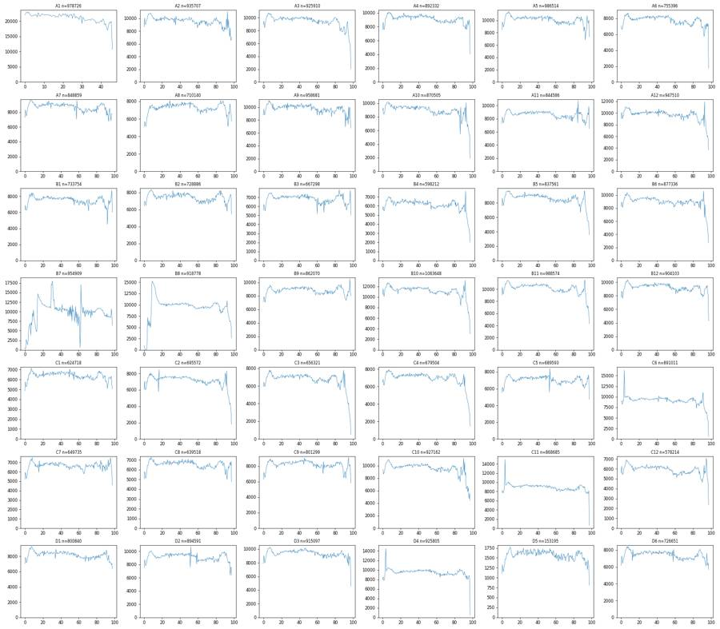
23
tool call · Bash
cd /task; cat > work/drift.py <<'EOF'
import numpy as np, pandas as pd, matplotlib
matplotlib.use('Agg')
import matplotlib.pyplot as plt
lay = pd.read_csv('/task/inputs/plate_layout.csv')
cols=['Time','FSC-A','SSC-A','BL1-A','RL3-A','VL1-A','FSC-H','SSC-H','BL1-H','RL3-H','VL1-H','FSC-W','SSC-W','BL1-W','RL3-W','VL1-W']
ix={c:i for i,c in enumerate(cols)}
chs=['FSC-A','SSC-A','RL3-A','VL1-A','BL1-A']
for ch in chs:
fig,axs=plt.subplots(7,6,figsize=(24,21))
for ax,well in zip(axs.ravel(),lay.well):
a=np.load(f'/task/work/cache/{well}.npy',mmap_mode='r')
t=np.asarray(a[:,0])/1000.; x=np.asarray(a[:,ix[ch]])
nb=int(np.ceil(t.max()/2))
b=np.minimum((t/2).astype(int),nb-1)
df=pd.DataFrame({'b':b,'x':x})
q=df.groupby('b').x.quantile([0.1,0.5,0.9,0.99]).unstack()
for c in q.columns: ax.plot(q.index*2+1,q[c],lw=0.8)
ax.set_yscale('symlog',linthresh=100) if ch in('BL1-A','RL3-A','VL1-A') else None
ax.set_title(f'{well} {ch}',fontsize=9)
fig.tight_layout(); fig.savefig(f'/task/work/drift_{ch}.png',dpi=55); plt.close(fig)
EOF
python3 -I work/drift.py24
tool output
(Bash completed with no output)
25
tool call · Read
{
"file_path": "/task/work/drift_FSC-A.png"
}26
tool output
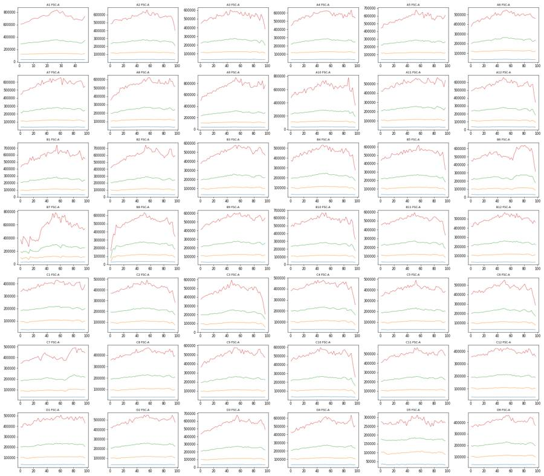
27
tool call · Read
{
"file_path": "/task/work/drift_RL3-A.png"
}28
tool output
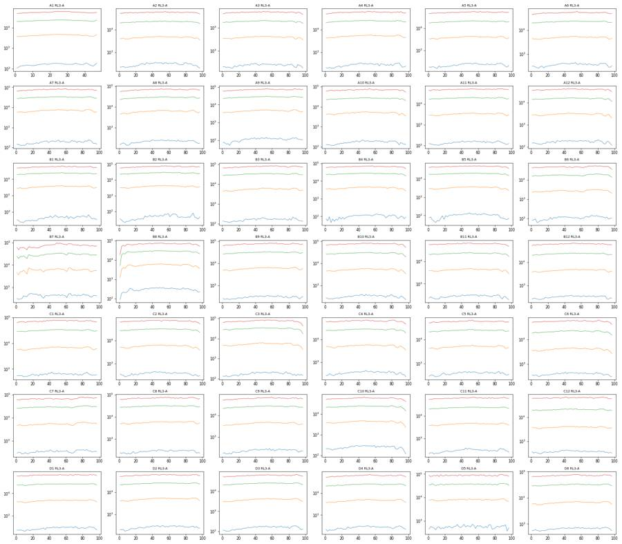
29
tool call · Read
{
"file_path": "/task/work/drift_BL1-A.png"
}30
tool output
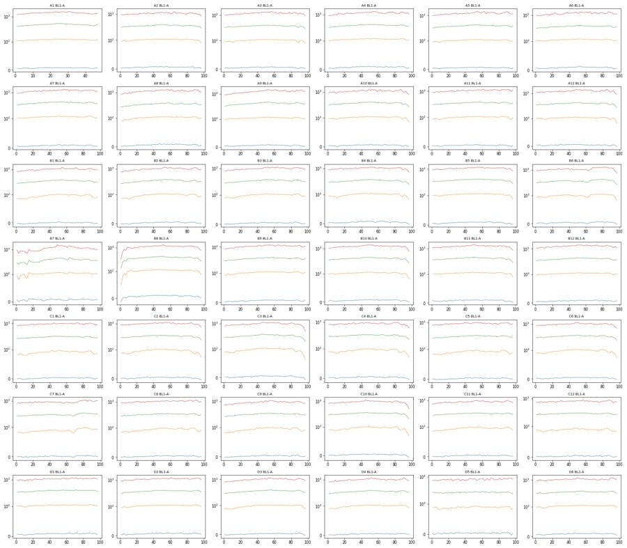
32
tool call · Bash
cd /task; cat > work/common.py <<'EOF'
import numpy as np, pandas as pd
lay = pd.read_csv('/task/inputs/plate_layout.csv')
cols=['Time','FSC-A','SSC-A','BL1-A','RL3-A','VL1-A','FSC-H','SSC-H','BL1-H','RL3-H','VL1-H','FSC-W','SSC-W','BL1-W','RL3-W','VL1-W']
ix={c:i for i,c in enumerate(cols)}
def load(well): return np.load(f'/task/work/cache/{well}.npy')
def logicle_like(x, w=300.): return np.arcsinh(x/w)
EOF
cat > work/scat.py <<'EOF'
import sys; sys.path.insert(0,'/task/work')
from common import *
import matplotlib; matplotlib.use('Agg'); import matplotlib.pyplot as plt
from matplotlib.colors import LogNorm
wells=['A1','A5','B1','B7','B8','C1','C7','D5','D6','A9','B10','C12']
fig,axs=plt.subplots(3,len(wells),figsize=(4*len(wells),12))
for j,w in enumerate(wells):
a=load(w)
axs[0,j].hist2d(a[:,ix['FSC-A']],a[:,ix['SSC-A']],bins=300,range=[[0,1.05e6],[0,1.05e6]],norm=LogNorm(),cmap='jet'); axs[0,j].set_title(w+' FSC-A vs SSC-A lin')
x=np.log10(np.clip(a[:,ix['FSC-A']],1e3,None)); y=np.log10(np.clip(a[:,ix['SSC-A']],1e2,None))
axs[1,j].hist2d(x,y,bins=300,range=[[4,6.05],[2,6.05]],norm=LogNorm(),cmap='jet'); axs[1,j].set_title('log10')
axs[2,j].hist2d(a[:,ix['SSC-H']],a[:,ix['SSC-A']],bins=300,range=[[0,1.05e6],[0,1.05e6]],norm=LogNorm(),cmap='jet'); axs[2,j].set_title('SSC-H vs SSC-A (all)')
fig.tight_layout(); fig.savefig('/task/work/scat.png',dpi=45)
EOF
python3 -I work/scat.py33
tool output
(Bash completed with no output)
34
agent
Acquisition screening is done (B7 and B8 show clearly unstable flow; several wells tail off in the last few seconds). Now looking at the scatter plots to place the Cells and Singlets polygons.
35
tool call · Read
{
"file_path": "/task/work/scat.png"
}36
tool output
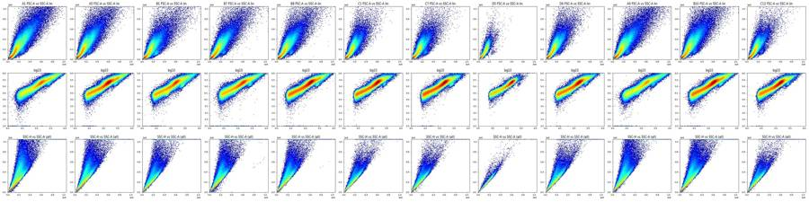
38
tool call · Bash
cd /task; cat > work/scat2.py <<'EOF'
import sys; sys.path.insert(0,'/task/work')
from common import *
import matplotlib; matplotlib.use('Agg'); import matplotlib.pyplot as plt
from matplotlib.colors import LogNorm
wells=['A5','B1','C7','D5']
fig,axs=plt.subplots(2,4,figsize=(28,14))
for j,w in enumerate(wells):
a=load(w)
axs[0,j].hist2d(a[:,ix['FSC-A']],a[:,ix['SSC-A']],bins=250,range=[[0,1.05e6],[0,1.05e6]],norm=LogNorm(),cmap='jet'); axs[0,j].set_title(w+' FSC-A vs SSC-A lin')
axs[0,j].grid(alpha=.3)
axs[1,j].hist2d(a[:,ix['FSC-A']],a[:,ix['SSC-A']],bins=250,range=[[0,4e5],[0,4e5]],cmap='jet'); axs[1,j].set_title(w+' zoom, linear density')
axs[1,j].grid(alpha=.3)
fig.tight_layout(); fig.savefig('/task/work/scat2.png',dpi=50)
# 1D hist of FSC-A and SSC-A pooled
fig,axs=plt.subplots(1,2,figsize=(16,5))
for w in ['A5','B1','C7','D5','A1','B10']:
a=load(w)
axs[0].hist(np.log10(np.clip(a[:,ix['FSC-A']],1e3,None)),bins=200,range=(4,6.1),histtype='step',density=True,label=w)
axs[1].hist(np.log10(np.clip(a[:,ix['SSC-A']],1e2,None)),bins=200,range=(3,6.1),histtype='step',density=True,label=w)
axs[0].set_title('log10 FSC-A');axs[1].set_title('log10 SSC-A');axs[0].legend()
fig.savefig('/task/work/scat1d.png',dpi=60)
EOF
python3 -I work/scat2.py39
tool call · Read
{
"file_path": "/task/work/scat2.png"
}40
tool call · Read
{
"file_path": "/task/work/scat1d.png"
}41
tool output
(Bash completed with no output)
42
tool output
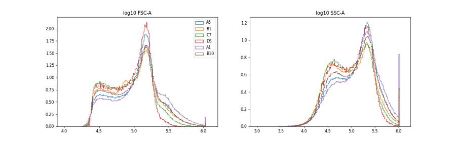
43
tool output
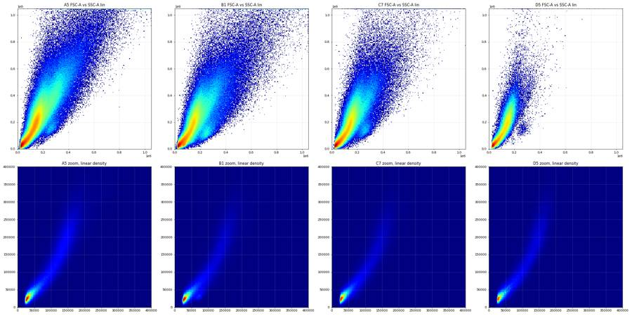
45
tool call · Bash
cd /task; cat > work/fl.py <<'EOF'
import sys; sys.path.insert(0,'/task/work')
from common import *
import matplotlib; matplotlib.use('Agg'); import matplotlib.pyplot as plt
from matplotlib.colors import LogNorm
wells=['A5','B1','C7','D5','A12']
fig,axs=plt.subplots(4,5,figsize=(30,24))
for j,w in enumerate(wells):
a=load(w)
fa=a[:,ix['FSC-A']]; sa=a[:,ix['SSC-A']]; sh=a[:,ix['SSC-H']]
r=np.arcsinh(a[:,ix['RL3-A']]/150); g=np.arcsinh(a[:,ix['BL1-A']]/50)
axs[0,j].hist2d(np.log10(np.clip(fa,1e4,None)),r,bins=250,range=[[4.3,6.05],[-2,10]],norm=LogNorm(),cmap='jet'); axs[0,j].set_title(w+' logFSC-A vs asinh(RL3/150) all')
c=(fa>70e3)&(sa>50e3)&(fa<1e6)&(sa<1e6)
axs[1,j].hist2d(r[c],sa[c],bins=250,range=[[-2,10],[0,1.05e6]],norm=LogNorm(),cmap='jet'); axs[1,j].set_title('RL3 vs SSC-A, crude cells')
axs[2,j].hist2d(g[c],sa[c],bins=250,range=[[-3,11],[0,1.05e6]],norm=LogNorm(),cmap='jet'); axs[2,j].set_title('asinh(BL1/50) vs SSC-A, crude cells')
axs[3,j].hist2d(r[c],g[c],bins=250,range=[[-2,10],[-3,11]],norm=LogNorm(),cmap='jet'); axs[3,j].set_title('RL3 vs BL1, crude cells')
for k in range(4): axs[k,j].grid(alpha=.3)
fig.tight_layout(); fig.savefig('/task/work/fl.png',dpi=45)
fig,axs=plt.subplots(2,2,figsize=(20,12))
for w in lay.well:
a=load(w)
fa=a[:,ix['FSC-A']]; sa=a[:,ix['SSC-A']]
c=(fa>70e3)&(sa>50e3)&(fa<1e6)&(sa<1e6)
r=np.arcsinh(a[:,ix['RL3-A']]/150); g=np.arcsinh(a[:,ix['BL1-A']]/50)
axs[0,0].hist(r[c],bins=300,range=(-2,10),histtype='step',density=True,lw=.6)
axs[0,1].hist(g[c],bins=300,range=(-3,11),histtype='step',density=True,lw=.6)
axs[1,0].hist(r[~c],bins=300,range=(-2,10),histtype='step',density=True,lw=.6)
axs[1,1].hist(g[c],bins=300,range=(-3,11),histtype='step',density=True,lw=.6); axs[1,1].set_yscale('log')
axs[0,0].set_title('asinh(RL3/150) crude cells, all wells'); axs[0,1].set_title('asinh(BL1/50) crude cells'); axs[1,0].set_title('RL3 non-cells')
t=np.array([0,100,300,1000,3000,1e4,3e4,1e5,3e5,1e6])
for ax,cf in [(axs[0,0],150),(axs[1,0],150),(axs[0,1],50),(axs[1,1],50)]:
ax.set_xticks(np.arcsinh(t/cf)); ax.set_xticklabels(['0','100','300','1e3','3e3','1e4','3e4','1e5','3e5','1e6']); ax.grid(alpha=.3)
fig.tight_layout(); fig.savefig('/task/work/fl1d.png',dpi=60)
EOF
python3 -I work/fl.py46
tool call · Read
{
"file_path": "/task/work/fl1d.png"
}47
tool call · Read
{
"file_path": "/task/work/fl.png"
}48
tool output
(Bash completed with no output)
49
tool output
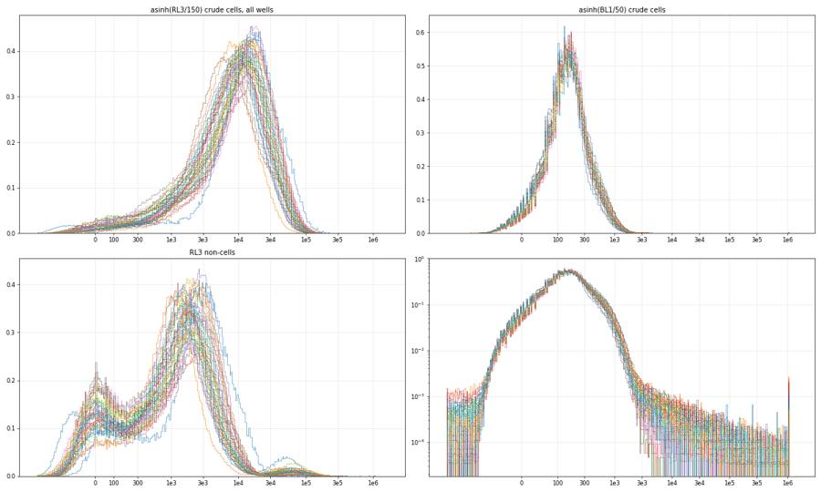
50
tool output
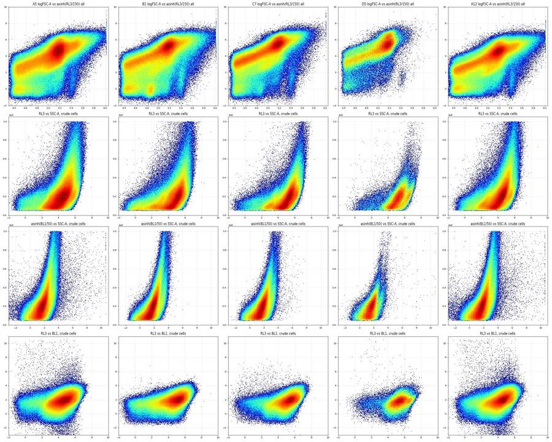
52
tool call · Bash
cd /task; cat > work/scat3.py <<'EOF'
import sys; sys.path.insert(0,'/task/work')
from common import *
import matplotlib; matplotlib.use('Agg'); import matplotlib.pyplot as plt
from matplotlib.colors import LogNorm
wells=['A5','B1','C7','D5']
H={}
rng=[[0,6e5],[0,6e5]]
fig,axs=plt.subplots(3,4,figsize=(28,21))
for j,w in enumerate(wells):
a=load(w)
fa=a[:,ix['FSC-A']]; sa=a[:,ix['SSC-A']]; r=a[:,ix['RL3-A']]
for k,(m,t) in enumerate([(np.ones(len(a),bool),'all'),(r<600,'RL3<600'),(r>3000,'RL3>3000')]):
axs[k,j].hist2d(fa[m],sa[m],bins=240,range=rng,norm=LogNorm(),cmap='jet'); axs[k,j].set_title(f'{w} {t} n={m.sum()}')
axs[k,j].grid(alpha=.4); axs[k,j].set_xticks(np.arange(0,6.1e5,5e4)); axs[k,j].set_yticks(np.arange(0,6.1e5,5e4)); axs[k,j].tick_params(labelsize=7)
fig.tight_layout(); fig.savefig('/task/work/scat3.png',dpi=50)
EOF
python3 -I work/scat3.py53
tool call · Read
{
"file_path": "/task/work/scat3.png"
}54
tool output
(Bash completed with no output)
55
tool output
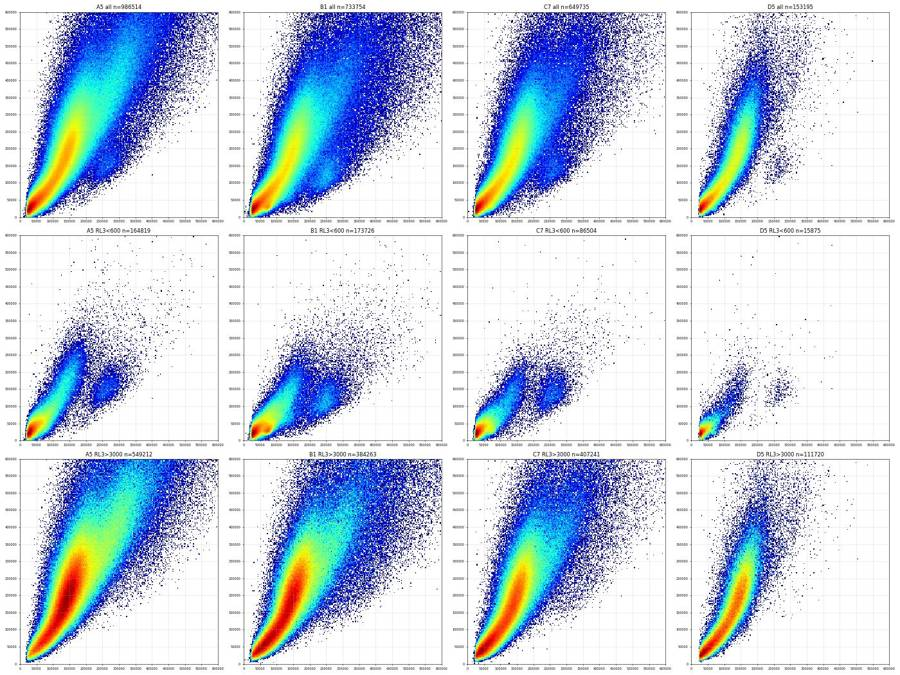
57
thinking
The gate design is underway: the scatter shows debris, a large bright cloud and a smaller dim cluster. Next I'll locate the debris/cell valley to set the Cells polygon, then Singlets and the two fluorescence cut-offs.
58
tool call · Bash
cd /task; cat > work/valley.py <<'EOF'
import sys; sys.path.insert(0,'/task/work')
from common import *
import matplotlib; matplotlib.use('Agg'); import matplotlib.pyplot as plt
from matplotlib.colors import LogNorm
fig,axs=plt.subplots(1,3,figsize=(27,8))
Hs=0
for w in lay.well:
a=load(w)
fa=a[:,ix['FSC-A']]; sa=a[:,ix['SSC-A']]
m=(fa>1e4)&(sa>3e3)
lf=np.log10(fa[m]); ls=np.log10(sa[m])
u=(lf+ls)/2
h,e=np.histogram(u,bins=200,range=(4,6)); axs[0].plot(e[:-1],h/h.sum(),lw=.6)
H,xe,ye=np.histogram2d(lf,ls,bins=220,range=[[4.3,6.05],[3.8,6.05]]); Hs=Hs+H
if w in('A5','B1','C7','D5','B7','A1'):
i=np.argmin(h[60:110])+60; print(w,'valley u=',e[i],10**e[i])
axs[0].set_title('(log FSC-A + log SSC-A)/2'); axs[0].grid()
axs[0].set_xticks(np.arange(4,6.01,0.1))
axs[1].pcolormesh(xe,ye,Hs.T,cmap='jet'); axs[1].set_title('pooled log-log density (linear colour)')
axs[2].pcolormesh(xe,ye,np.log10(Hs.T+1),cmap='jet'); axs[2].set_title('pooled log-log (log colour)')
for ax in axs[1:]:
ax.set_xticks(np.log10([3e4,5e4,7e4,1e5,1.5e5,2e5,3e5,5e5,1e6])); ax.set_xticklabels(['30k','50k','70k','100k','150k','200k','300k','500k','1M'])
ax.set_yticks(np.log10([1e4,2e4,3e4,5e4,7e4,1e5,1.5e5,2e5,3e5,5e5,1e6])); ax.set_yticklabels(['10k','20k','30k','50k','70k','100k','150k','200k','300k','500k','1M']); ax.grid(alpha=.4)
fig.tight_layout(); fig.savefig('/task/work/valley.png',dpi=55)
np.save('/task/work/pooledH.npy',Hs)
EOF
python3 -I work/valley.py59
tool call · Read
{
"file_path": "/task/work/valley.png"
}60
tool output
A1 valley u= 4.78 60255.98771719151 A5 valley u= 4.8 63095.76215861531 B1 valley u= 4.84 69183.12139914402 B7 valley u= 4.79 61659.49477018448 C7 valley u= 4.85 70794.56289251886 D5 valley u= 4.84 69183.12139914402
61
tool output
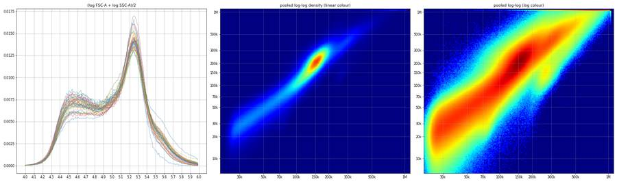
63
tool call · Bash
cd /task; cat > work/sing.py <<'EOF'
import sys; sys.path.insert(0,'/task/work')
from common import *
import matplotlib; matplotlib.use('Agg'); import matplotlib.pyplot as plt
from matplotlib.colors import LogNorm
from matplotlib.path import Path
cells=np.array([(75e3,40e3),(230e3,70e3),(400e3,120e3),(1.0e6,450e3),(1.0e6,1.0e6),(250e3,1.0e6),(60e3,250e3),(55e3,80e3)])
P=Path(cells)
wells=['A5','B1','C7','D5','A1','A9']
fig,axs=plt.subplots(3,6,figsize=(36,18))
for j,w in enumerate(wells):
a=load(w)
c=P.contains_points(a[:,[ix['FSC-A'],ix['SSC-A']]])
sh=a[c,ix['SSC-H']]; sa=a[c,ix['SSC-A']]
print(w,'cells %',100*c.mean(), 'SSC-H sat in cells %',100*np.mean(sh>=1048575))
axs[0,j].hist2d(sh,sa,bins=300,range=[[0,1.05e6],[0,1.05e6]],norm=LogNorm(),cmap='jet'); axs[0,j].set_title(w+' SSC-H vs SSC-A (Cells)')
axs[0,j].grid(alpha=.4)
ratio=sa/np.maximum(sh,1)
axs[1,j].hist2d(sh,ratio,bins=300,range=[[0,1.05e6],[0.8,2.5]],norm=LogNorm(),cmap='jet'); axs[1,j].set_title('SSC-A/SSC-H vs SSC-H'); axs[1,j].grid(alpha=.4)
axs[2,j].hist(ratio,bins=300,range=(0.8,2.5)); axs[2,j].set_yscale('log'); axs[2,j].grid(alpha=.4)
print(' ratio pct',np.percentile(ratio,[1,5,25,50,75,90,95,99]).round(3))
fig.tight_layout(); fig.savefig('/task/work/sing.png',dpi=45)
EOF
python3 -I work/sing.py64
tool call · Read
{
"file_path": "/task/work/sing.png"
}65
tool output
A5 cells % 72.53247292993308 SSC-H sat in cells % 0.0 ratio pct [1.014 1.061 1.155 1.241 1.445 2.011 2.35 3.156] B1 cells % 65.33538488376213 SSC-H sat in cells % 0.0 ratio pct [1.025 1.067 1.155 1.241 1.451 1.97 2.319 3.121] C7 cells % 63.16821473369912 SSC-H sat in cells % 0.0 ratio pct [1.028 1.061 1.14 1.216 1.352 1.733 2.062 2.646] D5 cells % 65.77368713078103 SSC-H sat in cells % 0.0 ratio pct [1.046 1.07 1.136 1.197 1.263 1.36 1.475 2.04 ] A1 cells % 73.97106033762259 SSC-H sat in cells % 0.0 ratio pct [0.982 1.049 1.168 1.293 1.688 2.283 2.662 3.557] A9 cells % 69.3079345475711 SSC-H sat in cells % 0.0 ratio pct [1.009 1.061 1.159 1.254 1.507 2.094 2.456 3.347]
66
tool output
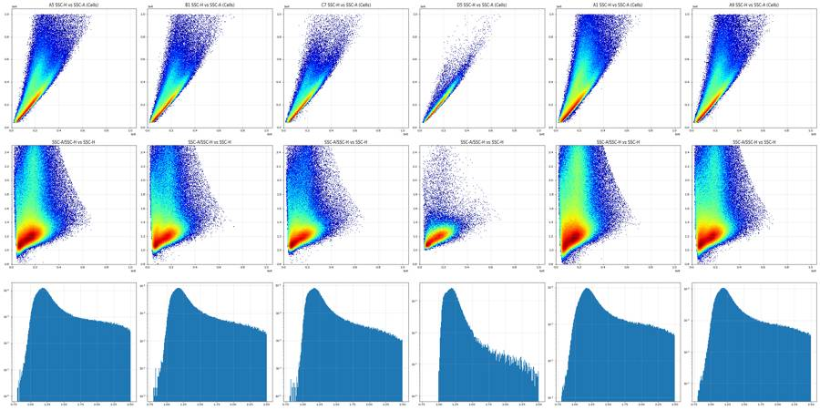
68
tool call · Bash
cd /task; cat > work/live.py <<'EOF'
import sys; sys.path.insert(0,'/task/work')
from common import *
import matplotlib; matplotlib.use('Agg'); import matplotlib.pyplot as plt
from matplotlib.colors import LogNorm
from matplotlib.path import Path
cells=Path(np.array([(75e3,40e3),(230e3,70e3),(400e3,120e3),(1.0e6,450e3),(1.0e6,1.0e6),(250e3,1.0e6),(60e3,250e3),(55e3,80e3)]))
sing=Path(np.array([(20e3,10e3),(1.05e6,0.97e6),(1.05e6,1.05e6),(720e3,1.05e6),(20e3,35e3)]))
t=np.array([-300,0,300,1000,3000,1e4,3e4,1e5,3e5,1e6]); cf=150
fig,axs=plt.subplots(2,2,figsize=(22,13))
fig2,axs2=plt.subplots(7,6,figsize=(30,30))
Hs=0
for w,ax2 in zip(lay.well,axs2.ravel()):
a=load(w)
c=cells.contains_points(a[:,[ix['FSC-A'],ix['SSC-A']]])
s=c&sing.contains_points(a[:,[ix['SSC-H'],ix['SSC-A']]])
r=np.arcsinh(a[s,ix['RL3-A']]/cf); sa=a[s,ix['SSC-A']]
h,e=np.histogram(r,bins=240,range=(-2,10))
axs[0,0].plot(e[:-1],h/h.sum(),lw=.6); axs[0,1].plot(e[:-1],h/h.sum(),lw=.6)
# low SSC subset
lo=sa<200e3
h2,_=np.histogram(r[lo],bins=240,range=(-2,10)); axs[1,0].plot(e[:-1],h2/h.sum(),lw=.6)
H,xe,ye=np.histogram2d(r,sa,bins=[240,200],range=[[-2,10],[0,1.0e6]]); Hs=Hs+H
ax2.pcolormesh(xe,ye,np.log10(H.T+1),cmap='jet'); ax2.set_title(f'{w} singlets={s.sum()}'); ax2.set_xticks(np.arcsinh(t/cf)); ax2.set_xticklabels(['-300','0','300','1e3','3e3','1e4','3e4','1e5','3e5','1e6'],fontsize=7); ax2.grid(alpha=.4)
print(w, len(a), c.sum(), s.sum(), round(100*s.sum()/c.sum(),1), 'RL3<600:%.1f <1000:%.1f <2000:%.1f'%tuple(100*np.mean(a[s,ix['RL3-A']]<x) for x in (600,1000,2000)))
axs[0,1].set_yscale('log')
axs[1,1].pcolormesh(xe,ye,np.log10(Hs.T+1),cmap='jet')
for ax in axs.ravel():
ax.set_xticks(np.arcsinh(t/cf)); ax.set_xticklabels(['-300','0','300','1e3','3e3','1e4','3e4','1e5','3e5','1e6']); ax.grid(alpha=.4)
axs[0,0].set_title('RL3-A on Singlets (asinh/150)'); axs[1,0].set_title('RL3-A on Singlets, SSC-A<200k'); axs[1,1].set_title('pooled RL3 vs SSC-A singlets')
fig.tight_layout(); fig.savefig('/task/work/live1d.png',dpi=55)
fig2.tight_layout(); fig2.savefig('/task/work/live2d.png',dpi=40)
EOF
python3 -I work/live.py69
tool call · Read
{
"file_path": "/task/work/live1d.png"
}70
tool output
A1 978726 723974 486355 67.2 RL3<600:12.1 <1000:17.0 <2000:26.5 A2 935707 674450 523607 77.6 RL3<600:7.4 <1000:10.1 <2000:18.3 A3 925910 675624 532956 78.9 RL3<600:8.7 <1000:13.2 <2000:23.4 A4 892332 655977 514017 78.4 RL3<600:7.4 <1000:10.5 <2000:17.9 A5 986514 715543 552936 77.3 RL3<600:7.8 <1000:11.6 <2000:22.1 A6 755396 553987 452063 81.6 RL3<600:6.3 <1000:9.1 <2000:16.5 A7 848859 600253 468767 78.1 RL3<600:8.3 <1000:10.9 <2000:15.7 A8 710140 514631 418064 81.2 RL3<600:8.4 <1000:11.6 <2000:17.6 A9 958681 664442 495717 74.6 RL3<600:11.2 <1000:15.4 <2000:22.9 A10 870505 619797 480831 77.6 RL3<600:9.0 <1000:12.6 <2000:19.9 A11 844586 586494 469946 80.1 RL3<600:10.8 <1000:15.9 <2000:25.7 A12 947510 662177 515989 77.9 RL3<600:10.1 <1000:15.2 <2000:26.4 B1 733754 479401 371764 77.5 RL3<600:12.9 <1000:17.0 <2000:24.0 B2 728886 474725 368587 77.6 RL3<600:11.8 <1000:15.6 <2000:22.6 B3 667298 439291 355972 81.0 RL3<600:8.1 <1000:10.9 <2000:16.5 B4 598212 390600 325322 83.3 RL3<600:10.4 <1000:13.9 <2000:20.4 B5 837561 569808 452568 79.4 RL3<600:12.0 <1000:16.4 <2000:25.1 B6 877336 591777 464130 78.4 RL3<600:13.7 <1000:19.4 <2000:29.9 B7 954909 658825 509510 77.3 RL3<600:5.3 <1000:8.6 <2000:15.1 B8 918778 629041 491302 78.1 RL3<600:6.2 <1000:9.6 <2000:16.0 B9 862070 602877 475893 78.9 RL3<600:6.6 <1000:10.4 <2000:17.4 B10 1083648 749327 569787 76.0 RL3<600:6.2 <1000:9.8 <2000:17.4 B11 988574 679604 531405 78.2 RL3<600:6.5 <1000:10.3 <2000:19.0 B12 904103 615449 485963 79.0 RL3<600:5.6 <1000:8.5 <2000:16.1 C1 624718 408306 347865 85.2 RL3<600:3.7 <1000:5.6 <2000:10.5 C2 695572 453540 376964 83.1 RL3<600:5.0 <1000:7.6 <2000:13.3 C3 656321 421803 343196 81.4 RL3<600:7.2 <1000:10.2 <2000:15.9 C4 679504 454009 375853 82.8 RL3<600:5.2 <1000:7.9 <2000:14.4 C5 689593 460990 385444 83.6 RL3<600:4.7 <1000:7.2 <2000:13.4 C6 891011 596166 474262 79.6 RL3<600:4.8 <1000:8.1 <2000:16.6 C7 649735 410426 343131 83.6 RL3<600:5.4 <1000:8.1 <2000:14.0 C8 639518 415266 347466 83.7 RL3<600:6.0 <1000:8.7 <2000:14.3 C9 801299 545719 436597 80.0 RL3<600:7.1 <1000:11.5 <2000:20.5 C10 927162 642478 503074 78.3 RL3<600:6.8 <1000:10.8 <2000:20.3 C11 868685 599760 476817 79.5 RL3<600:5.9 <1000:8.9 <2000:17.6 C12 578214 394772 337044 85.4 RL3<600:4.7 <1000:7.2 <2000:17.3 D1 800840 539869 437826 81.1 RL3<600:6.4 <1000:10.0 <2000:17.4 D2 894591 614445 489417 79.7 RL3<600:6.7 <1000:10.3 <2000:17.2 D3 915097 623320 482554 77.4 RL3<600:9.3 <1000:14.4 <2000:23.9 D4 925805 645670 505586 78.3 RL3<600:6.9 <1000:10.9 <2000:19.3 D5 153195 100762 96016 95.3 RL3<600:3.5 <1000:4.7 <2000:7.1 D6 726651 493090 413113 83.8 RL3<600:3.2 <1000:5.2 <2000:10.0
71
tool output
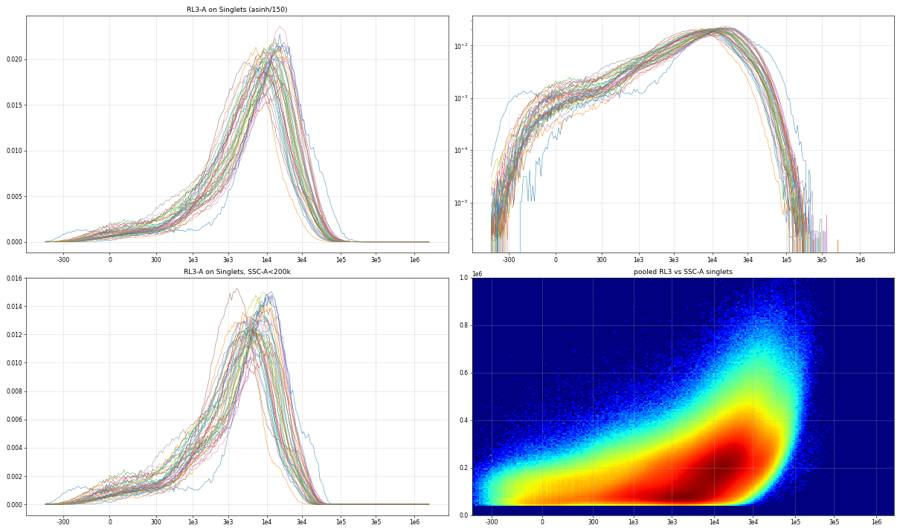
73
thinking
Polygons for Cells and Singlets are drafted; the Zombie NIR distribution has no clean valley, so I'm measuring the dim/bright split well by well before setting the Live cut-off.
74
tool call · Read
{
"file_path": "/task/work/live2d.png"
}75
tool output
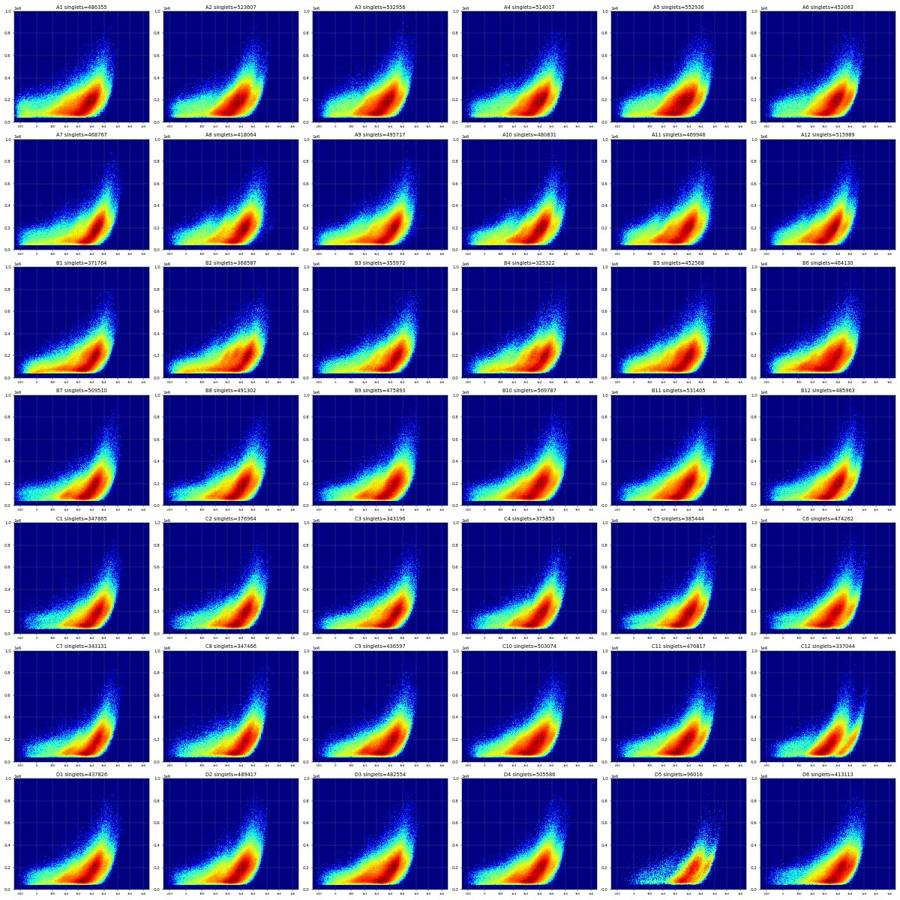
77
tool call · Bash
cd /task; cat > work/perwell.py <<'EOF'
import sys; sys.path.insert(0,'/task/work')
from common import *
import matplotlib; matplotlib.use('Agg'); import matplotlib.pyplot as plt
from matplotlib.path import Path
cells=Path(np.array([(75e3,40e3),(230e3,70e3),(400e3,120e3),(1.0e6,450e3),(1.0e6,1.0e6),(250e3,1.0e6),(60e3,250e3),(55e3,80e3)]))
sing=Path(np.array([(20e3,10e3),(1.05e6,0.97e6),(1.05e6,1.05e6),(720e3,1.05e6),(20e3,35e3)]))
t=np.array([-300,0,300,1000,3000,1e4,3e4,1e5,3e5,1e6])
fig,axs=plt.subplots(7,6,figsize=(30,26))
rows=[]
for w,ax in zip(lay.well,axs.ravel()):
a=load(w)
c=cells.contains_points(a[:,[ix['FSC-A'],ix['SSC-A']]])
s=c&sing.contains_points(a[:,[ix['SSC-H'],ix['SSC-A']]])
for ch,col,cf in [('RL3-A','r',150),('VL1-A','b',150),('BL1-A','g',50)]:
x=np.arcsinh(a[s,ix[ch]]/150)
h,e=np.histogram(x,bins=200,range=(-2,10)); ax.plot(e[:-1],h/h.sum(),col,lw=.8)
ax.set_title(w); ax.set_xticks(np.arcsinh(t/150)); ax.set_xticklabels(['-300','0','300','1e3','3e3','1e4','3e4','1e5','3e5','1e6'],fontsize=7); ax.grid(alpha=.4)
d=dict(well=w)
for ch in ['RL3-A','VL1-A','BL1-A']:
q=np.percentile(a[s,ix[ch]],[5,25,50,75,95,99.9])
for p,v in zip([5,25,50,75,95,99.9],q): d[f'{ch[:3]}_p{p}']=round(float(v))
d['gfp>3e3']=round(100*np.mean(a[s,ix['BL1-A']]>3e3),3)
d['gfp>1e4']=round(100*np.mean(a[s,ix['BL1-A']]>1e4),3)
rows.append(d)
fig.tight_layout(); fig.savefig('/task/work/perwell.png',dpi=40)
pd.set_option('display.width',300); pd.set_option('display.max_rows',100)
print(pd.DataFrame(rows).to_string())
EOF
python3 -I work/perwell.py78
tool call · Read
{
"file_path": "/task/work/perwell.png"
}79
tool output
well RL3_p5 RL3_p25 RL3_p50 RL3_p75 RL3_p95 RL3_p99.9 VL1_p5 VL1_p25 VL1_p50 VL1_p75 VL1_p95 VL1_p99.9 BL1_p5 BL1_p25 BL1_p50 BL1_p75 BL1_p95 BL1_p99.9 gfp>3e3 gfp>1e4 0 A1 94 1818 5295 10601 22940 60193 -61 1129 2674 4931 10889 52675 -3 63 123 202 449 1726 0.052 0.019 1 A2 260 2806 6275 11971 28571 77336 298 1369 2923 5253 11763 63266 -1 62 118 190 413 2224 0.076 0.029 2 A3 252 2168 5366 10580 23892 61747 326 1252 2632 4960 11095 68192 -2 61 117 192 443 3818 0.123 0.041 3 A4 296 3010 7176 13559 29412 75820 364 1428 2963 5320 11521 60913 3 69 126 202 430 4039 0.125 0.051 4 A5 280 2287 5244 10352 24736 66199 309 1331 2804 5169 11491 62192 -1 64 119 194 450 4286 0.132 0.055 5 A6 407 3132 6910 12882 29458 68936 450 1463 2889 5297 11931 70999 8 75 132 206 433 5056 0.152 0.060 6 A7 210 4344 10911 19019 38001 94600 259 1295 2778 5165 12769 65830 9 78 141 220 473 2085 0.073 0.023 7 A8 262 3532 9259 16862 35657 96629 313 1293 2745 5138 13062 76364 1 67 123 194 428 4172 0.129 0.049 8 A9 144 2334 7476 15138 31936 87917 82 1062 2580 5069 12802 58126 2 69 131 211 449 1949 0.070 0.027 9 A10 209 2783 7531 14402 32461 92542 161 1165 2738 5304 13811 66994 -2 64 121 196 433 2480 0.088 0.035 10 A11 198 1921 5553 11326 25967 71335 221 1136 2573 5005 12609 71019 0 66 125 202 450 4160 0.130 0.060 11 A12 257 1871 4557 8507 18982 50639 242 1195 2587 4867 11374 64342 0 67 125 203 481 6016 0.167 0.072 12 B1 95 2162 6992 14174 29991 72884 165 1151 2708 5449 16377 67008 1 66 125 201 429 1290 0.002 0.000 13 B2 103 2373 7720 17178 37397 95216 237 1205 2651 5167 14950 65007 6 72 130 202 409 1260 0.003 0.000 14 B3 237 3901 10642 20674 42832 103302 283 1236 2660 5087 13857 70267 5 72 130 206 449 1412 0.029 0.008 15 B4 181 2775 7897 16643 36511 89911 313 1111 2314 4382 11249 68845 6 73 131 206 467 1368 0.007 0.001 16 B5 163 1986 5639 11532 25273 63224 276 1126 2365 4458 11489 67472 9 76 137 216 479 1367 0.011 0.002 17 B6 154 1481 4588 10002 24430 62366 186 1041 2374 4654 12610 64493 1 66 126 206 461 1385 0.013 0.001 18 B7 558 3906 9289 16787 35615 88051 220 1241 2811 5349 12786 60161 2 67 126 206 441 1422 0.024 0.011 19 B8 463 3622 8718 16087 35660 88175 297 1312 2775 5181 12504 69313 6 73 133 211 447 1593 0.048 0.018 20 B9 429 3463 9269 17596 37556 90856 246 1213 2720 5281 13527 68647 4 68 128 204 415 1749 0.050 0.017 21 B10 466 3144 7863 15300 36838 98021 221 1135 2475 4676 11038 58927 1 67 127 209 491 1755 0.052 0.019 22 B11 448 2748 6456 12398 28960 79002 299 1255 2658 5047 11701 68580 6 73 134 218 522 1966 0.066 0.028 23 B12 522 3211 7124 13249 31360 82493 366 1420 2927 5437 12518 68641 5 72 132 215 522 3834 0.120 0.045 24 C1 877 5387 11800 21303 42985 99131 396 1259 2507 4674 11092 71782 2 64 119 191 443 1433 0.027 0.008 25 C2 592 4447 10523 19347 39998 92680 336 1217 2516 4704 11524 67932 3 68 125 201 462 1527 0.040 0.014 26 C3 318 3994 10438 20149 41647 99534 284 1198 2568 4914 13246 64681 5 72 130 206 447 1396 0.027 0.011 27 C4 568 3906 9158 17141 36345 88185 328 1231 2633 4922 11746 63335 1 64 121 198 414 1393 0.035 0.013 28 C5 646 3921 8391 15307 32763 77444 366 1239 2548 4753 10900 63656 -1 62 116 188 409 1858 0.065 0.025 29 C6 620 2966 6465 12357 30678 78219 329 1207 2548 4847 11236 60794 1 65 122 199 423 1866 0.063 0.020 30 C7 532 4467 10878 19920 40232 91308 321 1154 … [2,212 more characters not shown]
80
tool output
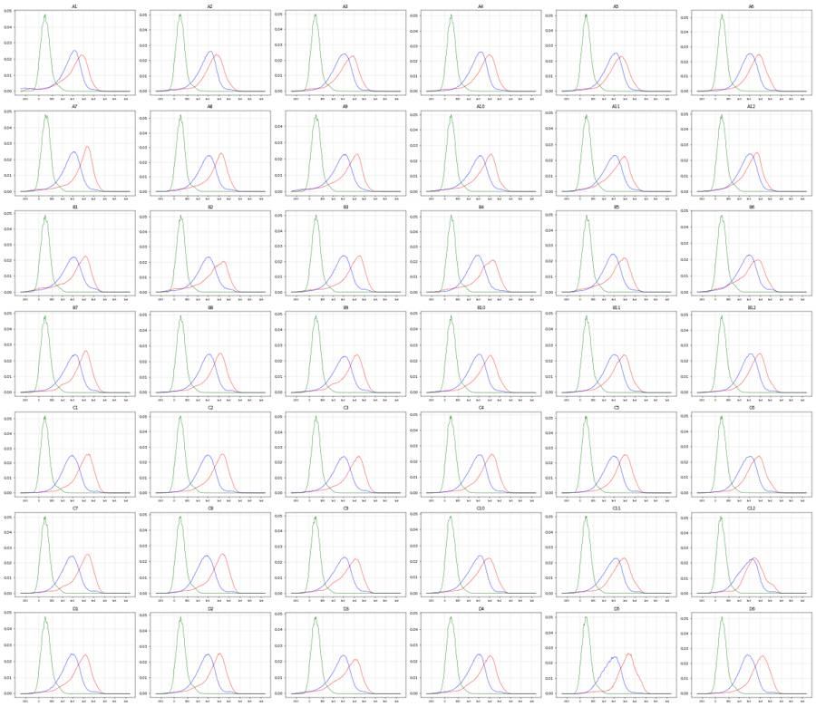
82
tool call · Bash
cd /task; cat > work/valley2.py <<'EOF'
import sys; sys.path.insert(0,'/task/work')
from common import *
import matplotlib; matplotlib.use('Agg'); import matplotlib.pyplot as plt
from matplotlib.path import Path
from scipy.ndimage import gaussian_filter1d
cells=Path(np.array([(75e3,40e3),(230e3,70e3),(400e3,120e3),(1.0e6,450e3),(1.0e6,1.0e6),(250e3,1.0e6),(60e3,250e3),(55e3,80e3)]))
sing=Path(np.array([(20e3,10e3),(1.05e6,0.97e6),(1.05e6,1.05e6),(720e3,1.05e6),(20e3,35e3)]))
t=np.array([-300,0,300,600,1000,2000,3000,1e4,3e4,1e5]); cf=150
fig,axs=plt.subplots(7,6,figsize=(30,26))
np.savez('/task/work/gates_draft.npz',cells=cells.vertices,sing=sing.vertices)
for w,ax in zip(lay.well,axs.ravel()):
a=load(w)
c=cells.contains_points(a[:,[ix['FSC-A'],ix['SSC-A']]])
s=c&sing.contains_points(a[:,[ix['SSC-H'],ix['SSC-A']]])
np.save(f'/task/work/cache/{w}_sing.npy',s)
r=np.arcsinh(a[s,ix['RL3-A']]/cf)
fa=a[s,ix['FSC-A']]; sa=a[s,ix['SSC-A']]
h,e=np.histogram(r,bins=300,range=(-2,7)); hs=gaussian_filter1d(h.astype(float),3)
ctr=(e[:-1]+e[1:])/2
ax.plot(ctr,hs,'k',lw=.8)
# intact cluster
cl=(fa>210e3)&(fa<330e3)&(sa>90e3)&(sa<210e3)&(sa<fa*0.75)
h2,_=np.histogram(r[cl],bins=300,range=(-2,7)); h2s=gaussian_filter1d(h2.astype(float),3)
ax.plot(ctr,h2s*5,'b',lw=.8)
ax.set_ylim(0,hs.max()*0.35)
# local minima of hs between 0 and asinh(5000/150)
lo,hi=np.searchsorted(ctr,[np.arcsinh(0),np.arcsinh(5000/cf)])
mins=[i for i in range(lo,hi) if hs[i]<=hs[i-1] and hs[i]<hs[i+1]]
mins2=[i for i in range(lo,hi) if h2s[i]<=h2s[i-1] and h2s[i]<h2s[i+1]]
print(w,'singlet minima RL3:',[int(cf*np.sinh(ctr[i])) for i in mins],' cluster n=%d minima:'%cl.sum(),[int(cf*np.sinh(ctr[i])) for i in mins2])
ax.set_title(w); ax.set_xticks(np.arcsinh(t/cf)); ax.set_xticklabels(['-300','0','300','600','1e3','2e3','3e3','1e4','3e4','1e5'],fontsize=7); ax.grid(alpha=.4)
fig.tight_layout(); fig.savefig('/task/work/valley2.png',dpi=42)
EOF
python3 -I work/valley2.py83
tool call · Read
{
"file_path": "/task/work/valley2.png"
}84
tool output
A1 singlet minima RL3: [8] cluster n=3599 minima: [54, 152, 411, 1325, 3576] A2 singlet minima RL3: [21, 225] cluster n=4399 minima: [26, 68, 1072] A3 singlet minima RL3: [122] cluster n=3365 minima: [21, 122, 250, 350, 1210, 2729, 3576] A4 singlet minima RL3: [12] cluster n=3669 minima: [3, 64, 134, 233, 619, 2420, 4975] A5 singlet minima RL3: [140] cluster n=3301 minima: [12, 54, 128, 2569, 4828] A6 singlet minima RL3: [194] cluster n=2775 minima: [26, 259, 767, 1407, 3797] A7 singlet minima RL3: [89] cluster n=3968 minima: [64, 159, 287, 482, 1686, 4546] A8 singlet minima RL3: [] cluster n=4202 minima: [8, 166, 297] A9 singlet minima RL3: [] cluster n=3665 minima: [40, 89, 146, 497, 815, 2278, 4685] A10 singlet minima RL3: [] cluster n=5477 minima: [152, 482, 3470] A11 singlet minima RL3: [] cluster n=3846 minima: [49, 122, 4828] A12 singlet minima RL3: [] cluster n=3814 minima: [73, 217, 1325, 1902, 2569, 4032] B1 singlet minima RL3: [152] cluster n=6058 minima: [146, 268, 453, 744] B2 singlet minima RL3: [152] cluster n=5670 minima: [12, 59, 166, 297, 398, 1139] B3 singlet minima RL3: [] cluster n=4634 minima: [140, 287, 1174, 4282] B4 singlet minima RL3: [] cluster n=4148 minima: [425, 1247, 2812] B5 singlet minima RL3: [] cluster n=5351 minima: [35, 2278, 3797] B6 singlet minima RL3: [] cluster n=5838 minima: [94, 146, 2145, 4828] B7 singlet minima RL3: [] cluster n=4081 minima: [35, 159, 277, 1960] B8 singlet minima RL3: [] cluster n=4376 minima: [122, 241, 439, 2986] B9 singlet minima RL3: [] cluster n=4856 minima: [49, 146, 250, 497] B10 singlet minima RL3: [] cluster n=3502 minima: [21, 140, 233, 4282] B11 singlet minima RL3: [] cluster n=3405 minima: [26, 159, 2812] B12 singlet minima RL3: [] cluster n=3033 minima: [152, 482, 2420, 3685] C1 singlet minima RL3: [] cluster n=2537 minima: [128, 374, 638, 1040, 2420] C2 singlet minima RL3: [] cluster n=3671 minima: [44, 152, 339, 467, 2211, 3171] C3 singlet minima RL3: [233] cluster n=3984 minima: [8, 241, 439, 2420, 3470] C4 singlet minima RL3: [] cluster n=3405 minima: [44, 159, 949, 2082, 4828] C5 singlet minima RL3: [] cluster n=3108 minima: [134, 328, 2986] C6 singlet minima RL3: [] cluster n=2919 minima: [26, 128, 159, 259, 328, 1174, 2211, 3367] C7 singlet minima RL3: [] cluster n=3897 minima: [12, 59, 128, 1636] C8 singlet minima RL3: [] cluster n=3917 minima: [35, 2348, 4155] C9 singlet minima RL3: [] cluster n=4624 minima: [194, 350, 2420, 4032] C10 singlet minima RL3: [] cluster n=4563 minima: [49, 140, 233, 4828] C11 singlet minima RL3: [] cluster n=3819 minima: [35, 4412] C12 singlet minima RL3: [259] cluster n=2242 minima: [79, 186, 1040, 1407, 2082, 2898, 4282] D1 singlet minima RL3: [] cluster n=3818 minima: [79, 179, 425] D2 singlet minima RL3: [] cluster n=4799 minima: [35, 317, 949] D3 singlet minima RL3: [] cluster n=4612 minima: [179, 530] D4 singlet minima RL3: [] cluster n=4401 minima: [209, 1105] D5 singlet minima RL3: [744, 1105] cluster n=333 minima: [3, 128, 530, 841, 1174, 1636, 2493, 3268, 4282] D6 singlet minima RL3: [26] cluster n=2079 minima: [35, 128, 259, 398]
85
tool output
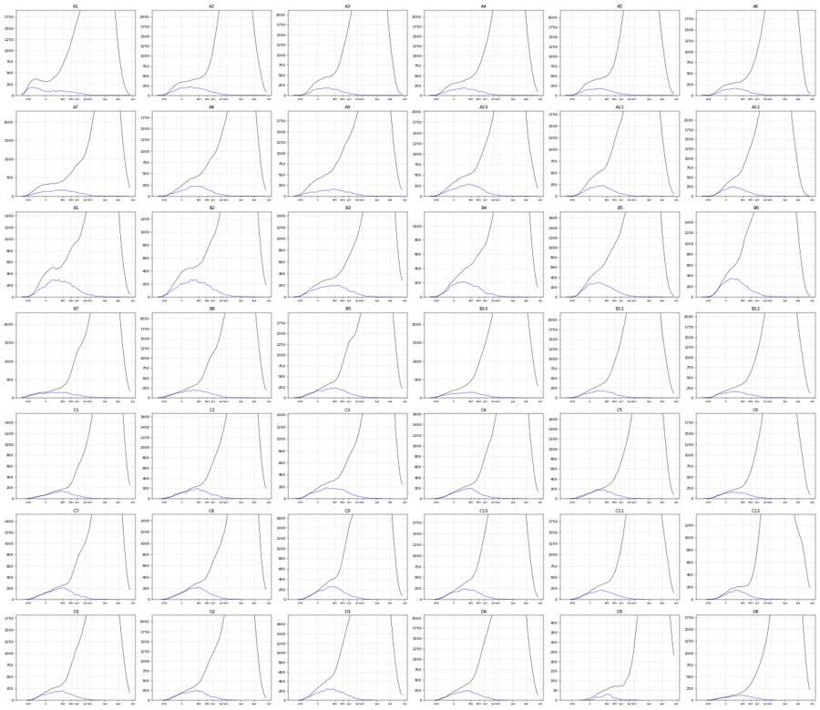
87
thinking
The live-cell cut-off is settling near RL3-A = 1000, where the dim shoulder ends and the bright population begins rising in every well. I'm now checking the GFP-negative upper edge on the Live population to set the GFP cut-off.
88
tool call · Bash
cd /task; cat > work/gfp.py <<'EOF'
import sys; sys.path.insert(0,'/task/work')
from common import *
import matplotlib; matplotlib.use('Agg'); import matplotlib.pyplot as plt
from matplotlib.colors import LogNorm
t=np.array([-300,0,300,600,1000,2000,3000,1e4,3e4,1e5,1e6]); cf=100
tl=['-300','0','300','600','1e3','2e3','3e3','1e4','3e4','1e5','1e6']
rows=[]
fig,axs=plt.subplots(1,2,figsize=(22,8))
fig2,axs2=plt.subplots(7,6,figsize=(30,28))
for w,ax2 in zip(lay.well,axs2.ravel()):
a=load(w); s=np.load(f'/task/work/cache/{w}_sing.npy')
live=s&(a[:,ix['RL3-A']]<1000)
g=a[live,ix['BL1-A']]; sa=a[live,ix['SSC-A']]
d=dict(well=w,sing=int(s.sum()),live=int(live.sum()),pct_live=round(100*live.sum()/s.sum(),2))
for p in [50,99,99.5,99.9]: d[f'p{p}']=round(float(np.percentile(g,p)))
for th in [500,700,1000,1500,2000,3000,5000,10000]: d[f'>{th}']=int((g>th).sum())
rows.append(d)
h,e=np.histogram(np.arcsinh(g/cf),bins=150,range=(-2,10))
for ax in axs: ax.step(e[:-1],h/h.sum(),lw=.6,color='r' if w in('B1','B2','B4') else 'gray')
ax2.scatter(np.arcsinh(g/cf),sa,s=1,c='k',alpha=.3,rasterized=True); ax2.set_xlim(-2,10); ax2.set_ylim(0,1.0e6)
ax2.set_title(f'{w} Live n={live.sum()}'); ax2.set_xticks(np.arcsinh(t/cf)); ax2.set_xticklabels(tl,fontsize=7); ax2.grid(alpha=.4)
axs[1].set_yscale('log')
for ax in axs: ax.set_xticks(np.arcsinh(t/cf)); ax.set_xticklabels(tl); ax.grid(alpha=.4)
fig.tight_layout(); fig.savefig('/task/work/gfp1d.png',dpi=55)
fig2.tight_layout(); fig2.savefig('/task/work/gfp2d.png',dpi=42)
pd.set_option('display.width',300); pd.set_option('display.max_rows',100)
print(pd.DataFrame(rows).to_string())
EOF
python3 -I work/gfp.py89
tool call · Read
{
"file_path": "/task/work/gfp1d.png"
}90
tool call · Read
{
"file_path": "/task/work/gfp2d.png"
}91
tool output
well sing live pct_live p50 p99 p99.5 p99.9 >500 >700 >1000 >1500 >2000 >3000 >5000 >10000 0 A1 486355 82812 17.03 70 552 735 2836 1033 471 187 112 95 80 58 38 1 A2 523607 53021 10.13 72 531 841 18082 589 346 225 174 153 128 108 80 2 A3 532956 70536 13.23 70 614 891 12327 993 530 307 224 191 148 114 78 3 A4 514017 53971 10.50 78 637 1060 31407 829 459 293 220 195 165 134 104 4 A5 552936 64303 11.63 72 665 1148 36917 1138 575 355 271 238 198 159 122 5 A6 452063 41289 9.13 81 770 1542 53049 840 478 296 212 170 136 106 84 6 A7 468767 51310 10.95 71 494 748 8752 504 284 181 138 122 100 71 44 7 A8 418064 48564 11.62 73 570 965 39093 604 345 233 193 176 153 123 92 8 A9 495717 76295 15.39 69 472 627 4790 661 289 161 124 111 98 74 59 9 A10 480831 60444 12.57 71 494 721 20235 598 315 212 173 159 130 107 84 10 A11 469946 74693 15.89 72 589 840 46853 1006 517 301 223 201 182 158 134 11 A12 515989 78519 15.22 70 692 1320 52199 1293 772 485 368 310 257 209 163 12 B1 371764 63067 16.96 64 367 475 757 271 94 21 9 7 4 1 1 13 B2 368587 57573 15.62 73 407 533 941 325 133 51 28 19 11 3 0 14 B3 355972 38963 10.95 76 543 880 6846 460 255 174 136 114 91 52 25 15 B4 325322 45066 13.85 82 528 692 1481 497 217 90 44 32 19 8 3 16 B5 452568 74220 16.40 81 554 735 2189 960 421 192 116 87 49 28 8 17 B6 464130 90271 19.45 70 470 638 1716 784 358 183 105 78 48 19 5 18 B7 509510 43573 8.55 68 559 803 9471 564 277 167 119 95 76 62 42 19 B8 491302 47331 9.63 74 689 1156 16796 909 458 268 204 170 143 106 70 20 B9 475893 49317 10.36 71 657 1196 13417 787 442 294 208 175 121 89 61 21 B10 569787 55584 9.76 68 678 1020 13020 1022 525 280 201 169 132 100 65 22 B11 531405 54478 10.25 76 818 1264 19795 1470 741 370 218 179 144 111 87 23 B12 485963 41414 8.52 79 1071 1910 51810 1436 799 456 262 199 141 100 77 24 C1 347865 19652 5.65 72 730 1965 11367 306 205 154 120 96 76 54 28 25 C2 376964 28518 7.57 75 919 2558 13372 508 340 273 215 181 124 80 42 26 C3 343196 34861 10.16 75 530 806 8610 393 217 138 108 95 72 54 31 27 C4 375853 29856 7.94 74 587 1570 18997 380 262 191 152 127 102 76 44 28 C5 385444 27732 7.19 73 625 1264 35657 383 235 162 131 114 99 80 61 29 C6 474262 38329 8.08 67 558 909 13844 474 268 174 128 111 86 72 46 30 C7 343131 27777 8.10 67 574 1163 4808 336 210 155 114 83 51 28 9 31 C8 347466 30076 8.66 77 1614 3206 12581 833 614 458 318 254 167 100 43 32 C9 436597 49994 11.45 64 649 1620 8416 672 467 347 271 213 151 87 41 33 C10 503074 54494 10.83 66 539 1108 10611 626 383 286 230 189 154 113 60 34 C11 476817 42635 8.94 71 523 808 14066 468 270 176 128 106 89 71 54 35 C12 337044 24321 7.22 75 511 825 39663 255 145 105 88 75 66 53 44 36 D1 437826 43926 10.03 69 490 663 3549 417 201 103 70 62 49 40 27 37 D2 489417 50392 10.30 71 604 950 14893 726 371 244 184 162 134 98 70 38 D3 482554 69386 14.38 63 431 577 3510 486 233 132 100 89 77 62 40 39 D4 505586 55207 10.92 63 433 615 6976 422 227 142 114 94 80 65 48 40 D5 96016 4560 4.75 84 574 1015 101730 57 36 24 20 18 18 15 14 41 D6 413113 21297 5.16 77 581 811 12544 295 144 75 50 40 35 27 24
92
tool output
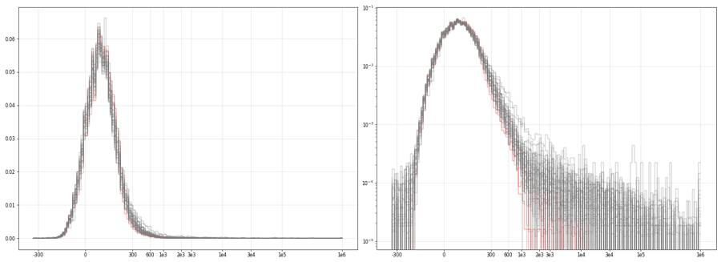
93
tool output
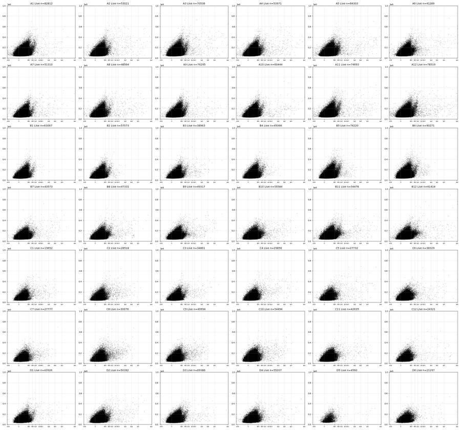
95
tool call · Bash
cd /task; cat > work/tail.py <<'EOF'
import sys; sys.path.insert(0,'/task/work')
from common import *
from matplotlib.path import Path
g=np.load('/task/work/gates_draft.npz'); cells=Path(g['cells'])
pd.set_option('display.width',300); pd.set_option('display.max_rows',100)
rows=[]
for w in lay.well:
a=load(w); s=np.load(f'/task/work/cache/{w}_sing.npy')
t=a[:,0]/1000.
# handle time reset: use segment after reset
d=np.diff(t); k=np.where(d<0)[0]
pre=0
if len(k): pre=k[0]+1
tt=t[pre:]; tmax=tt.max()
edges=np.arange(0,np.floor(tmax)+1e-9,1.0)
h,_=np.histogram(tt,bins=edges); med=np.median(h)
rel=h/med
# last full seconds
# time after which rate stays below 0.7*med
below=rel<0.7
i=len(rel)
while i>0 and below[i-1]: i-=1
tail_start=edges[i] if i<len(rel) else None
c=cells.contains_points(a[:,[ix['FSC-A'],ix['SSC-A']]])
live=s&(a[:,ix['RL3-A']]<1000)
def fr(m):
return dict(n=int(m.sum()), cells=100*c[m].mean(), sing=100*s[m].sum()/max(c[m].sum(),1), live=100*live[m].sum()/max(s[m].sum(),1), rl3=np.median(a[m&s,ix['RL3-A']]) if (m&s).sum() else np.nan)
idx=np.arange(len(a))
bulk=(idx>=pre)&(t>15)&(t<tmax-10); last5=(idx>=pre)&(t>=tmax-5); last2=(idx>=pre)&(t>=tmax-2); first5=(idx>=pre)&(t<5)
fb,fl,f2,ff=fr(bulk),fr(last5),fr(last2),fr(first5)
rows.append(dict(well=w,pre=pre,med=med,min_rel=rel.min().round(2),t_min=int(rel.argmin()),max_rel=rel.max().round(2),t_max=int(rel.argmax()),n_lt70=int((rel<0.7).sum()),n_gt130=int((rel>1.3).sum()),tail_start=tail_start,
r_first5=round(ff['n']/5/med,2), r_last5=round(fl['n']/5/med,2),r_last2=round(f2['n']/2/med,2),
cells_b=round(fb['cells'],1),cells_l5=round(fl['cells'],1),cells_l2=round(f2['cells'],1),sing_b=round(fb['sing'],1),sing_l5=round(fl['sing'],1),live_b=round(fb['live'],1),live_f5=round(ff['live'],1),live_l5=round(fl['live'],1),live_l2=round(f2['live'],1),rl3_b=round(fb['rl3']),rl3_l5=round(fl['rl3']),rl3_l2=round(f2['rl3'])))
df=pd.DataFrame(rows); df.to_csv('/task/work/tail.csv',index=False)
print(df.to_string())
EOF
python3 -I work/tail.py96
tool output
well pre med min_rel t_min max_rel t_max n_lt70 n_gt130 tail_start r_first5 r_last5 r_last2 cells_b cells_l5 cells_l2 sing_b sing_l5 live_b live_f5 live_l5 live_l2 rl3_b rl3_l5 rl3_l2 0 A1 0 21595.0 0.81 43 1.06 1 0 0 NaN 1.03 0.89 0.91 75.0 72.9 72.8 65.9 69.0 16.9 17.3 17.1 17.7 5352 5270 5080 1 A2 0 9736.0 0.77 95 1.11 7 0 0 NaN 0.99 0.85 0.76 72.8 69.7 66.9 76.9 81.3 10.0 10.8 10.6 11.0 6339 6049 5897 2 A3 0 9731.0 0.63 96 1.09 7 1 0 96.0 0.97 0.78 0.63 73.6 71.4 69.1 78.2 81.3 13.1 14.0 13.6 14.7 5423 5165 5002 3 A4 0 9275.0 0.83 92 1.09 7 0 0 NaN 0.92 0.89 0.90 74.2 71.1 71.8 77.6 79.6 10.4 11.3 11.1 10.7 7233 6857 6863 4 A5 0 10269.0 0.71 93 1.10 7 0 0 NaN 0.94 0.88 0.95 73.0 70.9 72.3 76.6 77.6 11.5 12.5 12.5 12.7 5284 5130 5130 5 A6 0 7917.0 0.74 92 1.09 7 0 0 NaN 0.94 0.87 0.92 74.0 70.7 71.9 80.8 82.4 9.0 9.6 9.8 9.7 6965 6608 6528 6 A7 0 8848.0 0.79 93 1.08 6 0 0 NaN 0.93 0.87 0.88 71.4 68.4 69.0 77.3 79.8 10.8 11.6 11.6 11.4 11015 10335 10307 7 A8 0 7376.0 0.73 1 1.08 88 0 0 NaN 0.78 0.88 0.93 73.3 70.6 71.7 80.3 82.1 11.5 12.4 11.9 12.0 9340 8968 9022 8 A9 0 9968.0 0.78 91 1.10 6 0 0 NaN 0.96 0.88 0.94 69.9 67.4 68.3 73.9 74.7 15.2 17.2 15.6 15.8 7568 7197 7049 9 A10 0 9119.0 0.62 96 1.11 5 1 0 96.0 1.01 0.75 0.61 71.9 67.5 64.4 76.7 81.8 12.3 13.9 13.1 12.8 7640 7094 7130 10 A11 0 8749.0 0.82 93 1.11 85 0 0 NaN 0.93 0.93 1.01 70.0 67.1 68.9 79.5 80.4 15.7 16.6 17.0 16.8 5619 5189 5204 11 A12 0 9856.0 0.61 96 1.12 5 2 0 95.0 1.00 0.75 0.57 70.5 66.2 61.6 77.2 82.4 15.1 16.1 15.4 15.5 4605 4408 4334 12 B1 0 7648.0 0.70 92 1.09 7 1 0 NaN 0.89 0.98 1.03 66.2 63.5 64.6 76.5 78.8 16.7 18.3 17.7 17.1 7096 6722 6972 13 B2 0 7525.0 0.81 92 1.10 8 0 0 NaN 0.94 0.96 1.00 66.0 63.1 64.3 76.6 78.2 15.4 17.4 15.7 15.6 7829 7437 7342 14 B3 0 6958.0 0.82 2 1.07 84 0 0 NaN 0.89 0.91 0.96 66.7 63.4 64.0 80.2 81.7 10.8 12.4 10.9 10.4 10754 10406 10569 15 B4 0 6291.0 0.56 96 1.11 7 2 0 95.0 0.95 0.66 0.52 66.2 59.8 55.0 82.3 89.7 13.6 15.1 15.0 14.8 8013 7398 7288 16 B5 0 8770.0 0.62 96 1.10 7 2 0 95.0 0.96 0.70 0.59 68.9 63.0 59.4 78.6 85.9 16.1 17.7 17.3 16.3 5709 5530 5462 17 B6 0 9071.0 0.58 96 1.12 7 2 0 95.0 0.99 0.67 0.53 67.9 64.5 60.4 77.7 84.9 19.2 21.0 19.6 18.8 4639 4500 4559 18 B7 0 10200.0 0.03 0 1.71 30 12 6 NaN 0.22 0.87 0.92 69.6 68.9 69.1 76.5 76.2 8.5 8.6 8.7 8.7 9339 8684 8628 19 B8 0 9976.0 0.00 2 1.52 9 10 4 95.0 0.19 0.70 0.58 69.4 63.2 59.6 77.3 84.7 9.6 9.8 10.1 9.8 8768 8230 7969 20 B9 0 8865.0 0.83 92 1.11 96 0 0 NaN 0.89 0.98 1.04 70.6 69.1 70.7 78.2 78.7 10.2 11.2 10.3 10.4 9362 9107 9208 21 B10 0 11374.0 0.59 96 1.10 5 2 0 95.0 0.99 0.68 0.55 69.9 63.7 58.7 75.3 83.6 9.6 10.9 9.9 9.4 7982 7417 7318 22 B11 0 10305.0 0.67 96 1.11 6 2 0 95.0 0.97 0.72 0.61 69.5 64.5 60.2 77.4 84.1 10.1 11.2 10.7 10.4 6534 6038 5817 23 B12 0 9356.0 0.85 91 1.10 7 0 0 NaN 0.92 0.95 0.92 68.8 66.3 66.6 78.2 80.2 8.4 8.8 8.9 8.7 7207 6714 6886 24 C1 0 6452.0 0.82 92 1.10 7 0 0 NaN 0.89 0.97 1.00 66.2 63.9 65.0 84.4 86.6 5.6 6.1 5.6 5.6 11940 11328 11313 25 C2 0 7296.0 0.56 96 1.08 6 3 0 94.0 0.92 0.63 0.52 66.3 58.4 53.9 82.2 89.7 7.5 8.0 7.5 6.9 10673 9936 9354 26 C3 0 6955.0 0.39 96 1.10 8 4 0 93.0 0.93 0.52 0.36 65.4 54.0 43.4 80.3 91.2 10.0 … [3,287 more characters not shown]
98
thinking
Screening is done: the end-of-run tail-offs are mild, while B7 and B8 show real flow disturbances. Next I'm inspecting the odd pre-run segments in C6, C11 and D4.
99
tool call · Bash
cd /task; cat > work/pre.py <<'EOF'
import sys; sys.path.insert(0,'/task/work')
from common import *
from matplotlib.path import Path
g=np.load('/task/work/gates_draft.npz'); cells=Path(g['cells'])
def summ(a,s,m,label):
c=cells.contains_points(a[m][:,[ix['FSC-A'],ix['SSC-A']]])
sm=s[m]; x=a[m]
live=sm&(x[:,ix['RL3-A']]<1000)
gp=live&(x[:,ix['BL1-A']]>1000)
print(f' {label}: n={m.sum()} cells%={100*c.mean():.1f} sing/cells%={100*sm.sum()/max(c.sum(),1):.1f} live/sing%={100*live.sum()/max(sm.sum(),1):.1f} gfp/live%={100*gp.sum()/max(live.sum(),1):.2f} ({gp.sum()}) medFSC={np.median(x[:,ix["FSC-A"]]):.0f} medSSC={np.median(x[:,ix["SSC-A"]]):.0f} medRL3(sing)={np.median(x[sm,ix["RL3-A"]]):.0f} medVL1(sing)={np.median(x[sm,ix["VL1-A"]]):.0f} medBL1(sing)={np.median(x[sm,ix["BL1-A"]]):.0f} sing BL1>3e3 %={100*np.mean(x[sm,ix["BL1-A"]]>3e3):.3f}')
prev={'C6':'C5','C11':'C10','D4':'D3'}
for w in ['C6','C11','D4']:
a=load(w); s=np.load(f'/task/work/cache/{w}_sing.npy'); t=a[:,0]/1000
k=np.where(np.diff(t)<0)[0][0]+1
idx=np.arange(len(a))
print(w,'pre events',k,'time range',t[:k].min(),t[:k].max(),'rate',k/(t[:k].max()-t[:k].min()))
h,_=np.histogram(t[:k],bins=np.arange(0,4.5,0.5)); print(' pre-seg rate per 0.5s',h)
summ(a,s,idx<k,'pre')
summ(a,s,(idx>=k)&(t<5),'main first 5s')
summ(a,s,(idx>=k),'main all')
p=prev[w]; b=load(p); sb=np.load(f'/task/work/cache/{p}_sing.npy')
summ(b,sb,np.ones(len(b),bool),'previous well '+p)
tb=b[:,0]/1000
summ(b,sb,tb>tb.max()-4,'previous well last 4 s')
EOF
python3 -I work/pre.py100
tool output
C6 pre events 4443 time range 3.35 3.894 rate 8167.277178176641 pre-seg rate per 0.5s [ 0 0 0 0 0 0 1148 3295] pre: n=4443 cells%=64.7 sing/cells%=86.4 live/sing%=9.6 gfp/live%=0.42 (1) medFSC=98137 medSSC=99470 medRL3(sing)=5759 medVL1(sing)=2222 medBL1(sing)=111 sing BL1>3e3 %=0.121 main first 5s: n=45722 cells%=65.9 sing/cells%=84.1 live/sing%=8.8 gfp/live%=0.36 (8) medFSC=102970 medSSC=109044 medRL3(sing)=6197 medVL1(sing)=2322 medBL1(sing)=118 sing BL1>3e3 %=0.051 main all: n=886568 cells%=66.9 sing/cells%=79.5 live/sing%=8.1 gfp/live%=0.45 (173) medFSC=106892 medSSC=120059 medRL3(sing)=6469 medVL1(sing)=2550 medBL1(sing)=122 sing BL1>3e3 %=0.062 previous well C5: n=689593 cells%=66.8 sing/cells%=83.6 live/sing%=7.2 gfp/live%=0.58 (162) medFSC=106495 medSSC=116620 medRL3(sing)=8391 medVL1(sing)=2548 medBL1(sing)=116 sing BL1>3e3 %=0.065 previous well last 4 s: n=28038 cells%=65.4 sing/cells%=84.3 live/sing%=7.5 gfp/live%=0.86 (10) medFSC=101378 medSSC=108687 medRL3(sing)=8097 medVL1(sing)=2491 medBL1(sing)=112 sing BL1>3e3 %=0.071 C11 pre events 4103 time range 3.345 3.896 rate 7446.462603972807 pre-seg rate per 0.5s [ 0 0 0 0 0 0 1121 2982] pre: n=4103 cells%=65.9 sing/cells%=86.8 live/sing%=9.7 gfp/live%=0.00 (0) medFSC=101429 medSSC=102487 medRL3(sing)=5888 medVL1(sing)=2342 medBL1(sing)=109 sing BL1>3e3 %=0.043 main first 5s: n=42271 cells%=67.6 sing/cells%=84.9 live/sing%=9.5 gfp/live%=0.30 (7) medFSC=106323 medSSC=111719 medRL3(sing)=6322 medVL1(sing)=2443 medBL1(sing)=112 sing BL1>3e3 %=0.021 main all: n=864582 cells%=69.1 sing/cells%=79.5 live/sing%=8.9 gfp/live%=0.42 (176) medFSC=111020 medSSC=124974 medRL3(sing)=6661 medVL1(sing)=2666 medBL1(sing)=116 sing BL1>3e3 %=0.028 previous well C10: n=927162 cells%=69.3 sing/cells%=78.3 live/sing%=10.8 gfp/live%=0.52 (286) medFSC=110996 medSSC=126567 medRL3(sing)=6360 medVL1(sing)=2484 medBL1(sing)=114 sing BL1>3e3 %=0.041 previous well last 4 s: n=22725 cells%=58.4 sing/cells%=89.1 live/sing%=11.2 gfp/live%=0.30 (4) medFSC=82245 medSSC=81615 medRL3(sing)=5869 medVL1(sing)=2190 medBL1(sing)=106 sing BL1>3e3 %=0.034 D4 pre events 4084 time range 3.292 3.836 rate 7507.354178308201 pre-seg rate per 0.5s [ 0 0 0 0 0 0 1563 2521] pre: n=4084 cells%=66.9 sing/cells%=86.2 live/sing%=12.8 gfp/live%=0.00 (0) medFSC=102307 medSSC=102952 medRL3(sing)=6279 medVL1(sing)=1996 medBL1(sing)=116 sing BL1>3e3 %=0.000 main first 5s: n=43737 cells%=67.8 sing/cells%=84.2 live/sing%=12.1 gfp/live%=0.20 (6) medFSC=104897 medSSC=109082 medRL3(sing)=6724 medVL1(sing)=2131 medBL1(sing)=116 sing BL1>3e3 %=0.016 main all: n=921721 cells%=69.8 sing/cells%=78.3 live/sing%=10.9 gfp/live%=0.26 (142) medFSC=111983 medSSC=126322 medRL3(sing)=7286 medVL1(sing)=2343 medBL1(sing)=122 sing BL1>3e3 %=0.045 previous well D3: n=915097 cells%=68.1 sing/cells%=77.4 live/sing%=14.4 gfp/live%=0.19 (132) medFSC=108014 medSSC=117114 medRL3(sing)=6648 medVL1(sing)=2323 medBL1(sing)=122 sing BL1>3e3 %=0.031 previous well last 4 s: n=34029 cells%=65.2 sing/cells%=79.9 live/sing%=15.0 gfp/live%=0.08 (2) medFSC=100170 medSSC=103899 medRL3(sing)=6261 medVL1(sing)=2212 medBL1(sing)=117 sing BL1>3e3 %=0.017
102
tool call · Bash
cd /task; cat > work/b78.py <<'EOF'
import sys; sys.path.insert(0,'/task/work')
from common import *
from matplotlib.path import Path
g=np.load('/task/work/gates_draft.npz'); cells=Path(g['cells'])
for w,edges in [('B8',[0,2,4,6,8,10,12,15,20,30,60,98]),('B7',[0,5,10,15,20,28,32,40,50,58,62,64,70,80,98]),('B9',[0,2,4,6,8,10,15,30,60,98]),('A8',[0,2,4,6,10,30,98])]:
a=load(w); s=np.load(f'/task/work/cache/{w}_sing.npy'); t=a[:,0]/1000
c=cells.contains_points(a[:,[ix['FSC-A'],ix['SSC-A']]])
live=s&(a[:,ix['RL3-A']]<1000); gp=live&(a[:,ix['BL1-A']]>1000)
print(w)
h,_=np.histogram(t,bins=np.arange(0,99,1)); print(' 1-s rates:',h.tolist())
for lo,hi in zip(edges[:-1],edges[1:]):
m=(t>=lo)&(t<hi)
if m.sum()==0: print(f' {lo}-{hi}s: n=0'); continue
print(f' {lo}-{hi}s: n={m.sum()} rate={m.sum()/(hi-lo):.0f}/s cells%={100*c[m].mean():.1f} sing%={100*s[m].sum()/max(c[m].sum(),1):.1f} live%={100*live[m].sum()/max(s[m].sum(),1):.1f} gfp={gp[m].sum()}/{live[m].sum()} medFSC={np.median(a[m,ix["FSC-A"]]):.0f} medRL3sing={np.median(a[m&s,ix["RL3-A"]]) if (m&s).sum() else float("nan"):.0f} medBL1={np.median(a[m,ix["BL1-A"]]):.0f} medVL1={np.median(a[m,ix["VL1-A"]]):.0f}')
EOF
python3 -I work/b78.py103
tool output
B8 1-s rates: [646, 92, 34, 2202, 6262, 6101, 5643, 6008, 11868, 15194, 14707, 14229, 13547, 12266, 11491, 10976, 10712, 10268, 10205, 10103, 10218, 10095, 10026, 10089, 9846, 9990, 10050, 10154, 10009, 10028, 9962, 10143, 10071, 10075, 10164, 10237, 10155, 10094, 10135, 9992, 10213, 10223, 10291, 10368, 10090, 10202, 10391, 10098, 10253, 9987, 9976, 9840, 9982, 9776, 9821, 9549, 9525, 9254, 9107, 9125, 9196, 9351, 9241, 9391, 9375, 9569, 9343, 9250, 9553, 9460, 9273, 9485, 9311, 9355, 9401, 9722, 9707, 10262, 10362, 10477, 10214, 10401, 10318, 9806, 9123, 8486, 8372, 8481, 9059, 9164, 9581, 9655, 10247, 8576, 7417, 6548, 6179, 3909] 0-2s: n=738 rate=369/s cells%=16.5 sing%=93.4 live%=16.7 gfp=1/19 medFSC=36962 medRL3sing=3878 medBL1=49 medVL1=591 2-4s: n=2236 rate=1118/s cells%=53.7 sing%=92.8 live%=8.5 gfp=0/95 medFSC=74001 medRL3sing=8444 medBL1=79 medVL1=1260 4-6s: n=12363 rate=6182/s cells%=62.8 sing%=87.0 live%=9.7 gfp=0/656 medFSC=96593 medRL3sing=8378 medBL1=93 medVL1=1621 6-8s: n=11651 rate=5826/s cells%=59.5 sing%=88.5 live%=10.1 gfp=3/621 medFSC=85360 medRL3sing=7785 medBL1=86 medVL1=1455 8-10s: n=27062 rate=13531/s cells%=65.1 sing%=78.0 live%=10.5 gfp=9/1440 medFSC=99352 medRL3sing=8398 medBL1=100 medVL1=1948 10-12s: n=28936 rate=14468/s cells%=67.9 sing%=79.3 live%=9.6 gfp=8/1491 medFSC=105906 medRL3sing=9008 medBL1=108 medVL1=2136 12-15s: n=37304 rate=12435/s cells%=68.0 sing%=81.1 live%=8.7 gfp=6/1789 medFSC=105653 medRL3sing=9159 medBL1=107 medVL1=2084 15-20s: n=52264 rate=10453/s cells%=65.8 sing%=80.5 live%=9.8 gfp=16/2700 medFSC=102840 medRL3sing=8506 medBL1=103 medVL1=1986 20-30s: n=100505 rate=10050/s cells%=67.3 sing%=78.5 live%=9.8 gfp=31/5186 medFSC=109663 medRL3sing=8631 medBL1=107 medVL1=2164 30-60s: n=299099 rate=9970/s cells%=70.4 sing%=75.9 live%=9.5 gfp=88/15111 medFSC=118930 medRL3sing=8840 medBL1=116 medVL1=2425 60-98s: n=346620 rate=9122/s cells%=68.6 sing%=78.5 live%=9.8 gfp=106/18223 medFSC=113526 medRL3sing=8670 medBL1=109 medVL1=2221 B7 1-s rates: [312, 1784, 1782, 1821, 5517, 6581, 4917, 6822, 8594, 9558, 8165, 6766, 5301, 5149, 13961, 13981, 13534, 12951, 12634, 12010, 11906, 11683, 11635, 11366, 11272, 11228, 11216, 11192, 11099, 14671, 17476, 16078, 12973, 10943, 10853, 10773, 10834, 10200, 10448, 10885, 10512, 10820, 10656, 10803, 10524, 10464, 10329, 10538, 9371, 9611, 10284, 10091, 9118, 10867, 10153, 8289, 10261, 9119, 7629, 7831, 8400, 3885, 10734, 11839, 10202, 10850, 9827, 9072, 10134, 9651, 10078, 9691, 9773, 9211, 10035, 9557, 9991, 9950, 9835, 10384, 10601, 10775, 10821, 10841, 10816, 10535, 10257, 10088, 9548, 9016, 8948, 9018, 8687, 8673, 8729, 8542, 9976, 7798] 0-5s: n=11216 rate=2243/s cells%=62.0 sing%=88.8 live%=8.6 gfp=2/534 medFSC=90767 medRL3sing=9002 medBL1=92 medVL1=1532 5-10s: n=36472 rate=7294/s cells%=65.9 sing%=86.1 live%=8.7 gfp=7/1804 medFSC=97303 medRL3sing=9346 medBL1=98 medVL1=1883 10-15s: n=39342 rate=7868/s cells%=64.7 sing%=86.3 live%=8.1 gfp=7/1770 medFSC=93024 medRL3sing=9466 medBL1=97 medVL1=1879 15-20s: n=65110 rate=13022/s cells%=71.9 sing%=83.9 live%=8.0 gfp=13/3159 medFSC=105128 medRL3sing=10004 medBL1=107 medVL1=2263 20-28s: n=91498 rate=11437/s cells%=67.7 sing%=85.3 live%=8.0 gfp=27/4222 medFSC=97032 medRL3sing=9528 medBL1=101 medVL1=2026 28-32s: n=59324 rate=14831/s cells%=68.4 sing%=78.7 live%=8.4 gfp=8/2677 medFSC=104814 medRL3sing=9380 medBL1=104 medVL1=2176 32-40s: n=87909 rate=10989/s cells%=67.6 sing%=74.7 live%=8.8 gfp=14/3906 medFSC=108345 medRL3sing=9051 medBL1=107 medVL1=2294 40-50s: n=103628 rate=10363/s cells%=70.6 sing%=73.2 live%=8.7 gfp=14/4679 medFSC=116527 medRL3sing=9230 medBL1=113 medVL1=2561 50-58s: n=78182 rate=9773/s cells%=70.4 sing%=71.8 live%=8.8 gfp=11/3470 medFSC=117833 medRL3sing=9306 medBL1=115 medVL1=2596 58-62s: n=27745 rate=6936/s cells%=66.7 sing%=73.7 live%=8.8 gfp=3/1197 medFSC=105019 medRL3sing=8756 medBL1=105 medVL1=2201 62-64s: n=22573 rate=11286/s cells%=72.6 sing%=72.2 live%=8.8 gfp=4/1044 medFSC=121902 medRL3sing=9502 medBL1=120 medVL1=2805 64-70s: n=59736 rate=9956/s cells%=71.2 sing%=72.9 live%=8.8 gfp=4/2732 medFSC=116893 medRL3sing=9221 medBL1=115 medVL1=2583 70-80s: n=98505 rate=9850/s cells%=69.2 sing%=75.1 live%=8.7 gfp=17/4472 medFSC=111847 medRL3sing=9035 medBL1=109 medVL1=2370 80-98s: n=173669 rate=9648/s cells%=69.1 sing%=76.4 live%=8.6 gfp=36/7907 medFSC=110899 medRL3sing=9119 medBL1=108 medVL1=2301 B9 1-s rates: [7452, 7490, 7485, 8362, 8791, 9094, 9277, 9384, 9383, 9122, 8862, 8718, 8632, 8590, 8477, 8688, 8797, 8478, 8769, 8667, 8831, 9003, 9059, 9176, 9018, 9051, 9058, 9121, 8987, 8919, 9058, 9147, 9149, 9126, 9096, 9261, 9115, 9262, 9158, 9206, 9061, 9142, 9214, 9325, 9211, 9182, 9131, 9278, 9181, 8865, 9144, 9041, 9173, 9105, 9103, 8846, 8709, 8797, 8180, 8475, 8448, 8220, 8446, 8154, 8401, 8398, 8314, 8286, 8360, 8777, 8793, 8539, 8440, 8427, 8685, 8370, 8724, 8375, 8456, 8563, 8835, 9135, 9112, 9447, 9530, 9409, 9493, 9215, 9068, 8938, 8152, 7661, 7352, 8005, 8333, 8625, 9855, 8247] 0-2s: n=14942 rate=7471/s cells%=68.3 sing%=86.3 live%=11.8 gfp=10/1041 medFSC=107204 medRL3sing=8708 medBL1=95 medVL1=1748 2-4s: n=15847 rate=7924/s cells%=67.6 sing%=85.0 live%=10.7 gfp=4/978 medFSC=106430 medRL3sing=8578 medBL1=93 medVL1=1803 4-6s: n=17885 rate=8942/s cells%=68.5 sing%=83.3 live%=11.1 gfp=8/1135 medFSC=109094 medRL3sing=8927 medBL1=99 medVL1=1946 6-8s: n=18661 rate=9330/s cells%=66.8 sing%=82.3 live%=11.1 gfp=9/1141 medFSC=104038 medRL3sing=8874 medBL1=94 medVL1=1929 8-10s: n=18505 rate=9252/s cells%=65.9 sing%=81.2 live%=11.2 gfp=5/1112 medFSC=101518 medRL3sing=8708 medBL1=95 medVL1=1909 10-15s: n=43279 rate=8656/s cells%=66.0 sing%=81.8 live%=10.6 gfp=15/2472 medFSC=104642 medRL3sing=8874 medBL1=97 medVL1=1987 15-30s: n=133622 rate=8908/s cells%=68.6 sing%=80.0 live%=10.4 gfp=55/7625 medFSC=110961 medRL3sing=9205 medBL1=102 medVL1=2186 30-60s: n=271741 rate=9058/s cells%=7 … [1,588 more characters not shown]
105
tool call · Bash
cd /task; cat > work/neg.py <<'EOF'
import sys; sys.path.insert(0,'/task/work')
from common import *
rows=[]
for w in lay.well:
a=load(w); s=np.load(f'/task/work/cache/{w}_sing.npy')
d=dict(well=w)
for ch in ['RL3-A','VL1-A','BL1-A']:
x=a[:,ix[ch]]
d[ch[:3]+'<-100 all%']=round(100*np.mean(x<-100),2)
d[ch[:3]+'<-100 sing%']=round(100*np.mean(x[s]<-100),2)
d[ch[:3]+'<0 sing%']=round(100*np.mean(x[s]<0),2)
live=s&(a[:,ix['RL3-A']]<1000)
d['live%']=round(100*live.sum()/s.sum(),1)
d['live VL1 med']=round(float(np.median(a[live,ix['VL1-A']])))
d['live FSC med']=round(float(np.median(a[live,ix['FSC-A']])))
d['live SSC med']=round(float(np.median(a[live,ix['SSC-A']])))
d['W_fsc med']=round(float(np.median(a[:,ix['FSC-W']])),1)
rows.append(d)
pd.set_option('display.width',300); pd.set_option('display.max_rows',100)
print(pd.DataFrame(rows).to_string())
EOF
python3 -I work/neg.py106
tool output
well RL3<-100 all% RL3<-100 sing% RL3<0 sing% VL1<-100 all% VL1<-100 sing% VL1<0 sing% BL1<-100 all% BL1<-100 sing% BL1<0 sing% live% live VL1 med live FSC med live SSC med W_fsc med 0 A1 3.76 2.27 3.66 7.34 4.50 5.81 0.20 0.17 5.41 17.0 1687 103133 107938 85.0 1 A2 1.09 0.61 1.81 1.61 0.62 1.26 0.15 0.12 5.12 10.1 2375 103970 103598 84.0 2 A3 0.73 0.35 1.44 1.10 0.33 0.81 0.14 0.12 5.22 13.2 1808 103983 107364 84.0 3 A4 1.10 0.52 1.59 1.17 0.33 0.78 0.22 0.20 4.45 10.5 2373 104739 105481 84.0 4 A5 0.90 0.39 1.48 1.83 0.55 1.15 0.33 0.31 5.13 11.6 2128 101243 102232 84.0 5 A6 0.62 0.29 1.17 0.69 0.16 0.42 0.26 0.24 3.81 9.1 2396 107155 108381 84.0 6 A7 2.04 0.92 2.22 1.98 0.69 1.45 0.13 0.11 3.66 10.9 2038 100364 95282 83.0 7 A8 0.90 0.35 1.21 0.80 0.31 0.83 0.18 0.16 4.69 11.6 2464 105307 104044 84.0 8 A9 1.89 0.90 2.34 4.17 2.17 3.59 0.13 0.11 4.66 15.4 1693 99270 95567 83.0 9 A10 1.32 0.50 1.60 2.88 1.24 2.39 0.18 0.16 5.18 12.6 2460 101915 100118 83.0 10 A11 0.74 0.28 1.36 1.85 0.68 1.55 0.26 0.24 4.97 15.9 1674 100285 103498 82.0 11 A12 0.46 0.16 0.95 2.25 0.82 1.60 0.41 0.38 4.92 15.2 1496 102290 106062 83.0 12 B1 1.41 0.63 2.44 2.58 1.08 2.21 0.06 0.03 4.79 17.0 1899 101741 89805 82.0 13 B2 1.88 0.85 2.54 1.65 0.59 1.44 0.05 0.02 4.01 15.6 2222 105275 90809 82.0 14 B3 1.51 0.62 1.69 1.20 0.39 0.99 0.05 0.03 4.12 10.9 2569 105894 94203 82.0 15 B4 1.04 0.41 1.56 0.39 0.13 0.45 0.05 0.02 3.92 13.9 1790 108139 97878 81.0 16 B5 0.81 0.32 1.54 0.86 0.29 0.85 0.04 0.02 3.60 16.4 1595 104185 100812 82.0 17 B6 0.76 0.33 1.58 2.05 0.83 1.82 0.04 0.03 4.70 19.4 1491 101012 105031 82.0 18 B7 1.58 0.60 1.19 2.91 1.11 1.97 0.11 0.04 4.55 8.6 1987 94235 97940 82.0 19 B8 1.16 0.35 0.94 1.56 0.51 1.11 0.05 0.03 3.91 9.6 1882 97619 96983 82.0 20 B9 1.01 0.32 0.95 1.78 0.65 1.43 0.05 0.04 4.36 10.4 2170 99107 98120 83.0 21 B10 1.36 0.38 1.01 2.40 0.84 1.72 0.13 0.11 4.74 9.8 1748 96670 98555 83.0 22 B11 0.78 0.21 0.80 1.67 0.46 1.06 0.18 0.16 4.10 10.3 1904 99352 100092 83.0 23 B12 0.75 0.23 0.84 1.72 0.41 0.90 0.36 0.33 4.22 8.5 2737 101544 101272 82.0 24 C1 0.48 0.15 0.50 0.31 0.08 0.29 0.04 0.02 4.65 5.6 2500 102276 100681 81.0 25 C2 0.74 0.22 0.72 0.61 0.18 0.55 0.05 0.03 4.46 7.6 2638 102740 100767 81.0 26 C3 1.26 0.41 1.24 1.11 0.31 0.86 0.05 0.03 4.07 10.2 2376 103424 91871 81.0 27 C4 0.59 0.17 0.65 0.80 0.21 0.61 0.05 0.03 4.75 7.9 2780 101366 101314 82.0 28 C5 0.48 0.13 0.57 0.45 0.11 0.39 0.11 0.09 5.04 7.2 2790 102376 100922 81.0 … [2,599 more characters not shown]
108
thinking
Flag decisions are mostly settled, with B7 and B8 cleared for unstable flow and D5 borderline. I'm now overlaying the draft polygons on the data to check their edges before building the FlowKit strategy.
109
tool call · Bash
cd /task; cat > work/overlay.py <<'EOF'
import sys; sys.path.insert(0,'/task/work')
from common import *
import matplotlib; matplotlib.use('Agg'); import matplotlib.pyplot as plt
from matplotlib.colors import LogNorm
from matplotlib.path import Path
g=np.load('/task/work/gates_draft.npz'); cv=g['cells']; sv=g['sing']
cells=Path(cv)
wells=['A1','B1','C7','D5']
fig,axs=plt.subplots(3,4,figsize=(32,24))
for j,w in enumerate(wells):
a=load(w)
fa=a[:,ix['FSC-A']]; sa=a[:,ix['SSC-A']]; sh=a[:,ix['SSC-H']]
axs[0,j].hist2d(fa,sa,bins=350,range=[[0,1.06e6],[0,1.06e6]],norm=LogNorm(),cmap='jet')
axs[0,j].plot(*np.vstack([cv,cv[:1]]).T,'k-',lw=2); axs[0,j].set_title(w+' all events')
axs[1,j].hist2d(fa,sa,bins=300,range=[[0,3.5e5],[0,3.5e5]],cmap='jet',norm=LogNorm())
axs[1,j].plot(*np.vstack([cv,cv[:1]]).T,'k-',lw=2); axs[1,j].set_xlim(0,3.5e5); axs[1,j].set_ylim(0,3.5e5)
c=cells.contains_points(a[:,[ix['FSC-A'],ix['SSC-A']]])
axs[2,j].hist2d(sh[c],sa[c],bins=350,range=[[0,1.06e6],[0,1.06e6]],norm=LogNorm(),cmap='jet')
axs[2,j].plot(*np.vstack([sv,sv[:1]]).T,'k-',lw=1.5); axs[2,j].set_title(w+' Cells: SSC-H vs SSC-A')
for k in range(3): axs[k,j].grid(alpha=.4)
fig.tight_layout(); fig.savefig('/task/work/overlay.png',dpi=45)
EOF
python3 -I work/overlay.py110
tool call · Read
{
"file_path": "/task/work/overlay.png"
}111
tool output
(Bash completed with no output)
112
tool output
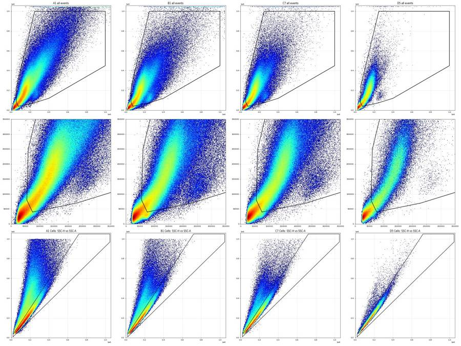
114
tool call · Bash
cd /task; python3 - <<'EOF' import flowkit as fk, inspect print(fk.__version__) print(inspect.signature(fk.transforms.LogicleTransform.__init__)) print(inspect.signature(fk.Dimension.__init__)) print(inspect.signature(fk.gates.RectangleGate.__init__)) print(inspect.signature(fk.gates.PolygonGate.__init__)) print(inspect.signature(fk.GatingStrategy.add_gate)) print(inspect.signature(fk.GatingStrategy.add_transform)) print(inspect.signature(fk.GatingStrategy.gate_sample)) print(inspect.signature(fk.Sample.__init__)) print(inspect.signature(fk.export_gatingml)) print(inspect.signature(fk.parse_gating_xml)) EOF
115
tool output
1.2.3 (self, param_t, param_w, param_m, param_a) (self, dimension_id, compensation_ref='uncompensated', transformation_ref=None, range_min=None, range_max=None) (self, gate_name, dimensions, use_complement=False) (self, gate_name, dimensions, vertices, use_complement=False) (self, gate, gate_path, sample_id=None) (self, transform_id, transform) (self, sample, cache_events=False, verbose=False) (self, fcs_path_or_data, sample_id=None, filename_as_id=False, channel_labels=None, compensation=None, null_channel_list=None, ignore_offset_error=False, ignore_offset_discrepancy=False, use_header_offsets=False, cache_original_events=False, subsample=10000) (gating_strategy, file_handle, sample_id=None) (xml_file_or_path)
117
tool call · Bash
cd /task; cat > work/build_gates.py <<'EOF'
import numpy as np, flowkit as fk
OUT='/task/outputs/gates.xml'
gs=fk.GatingStrategy()
logicle=fk.transforms.LogicleTransform(param_t=1048576, param_w=0.75, param_m=4.5, param_a=0)
gs.add_transform('logicle', logicle)
def lg(v): return float(logicle.apply(np.array([float(v)]))[0])
U='uncompensated'
# Cells: FSC-A vs SSC-A polygon (raw linear units)
cells_v=[(75e3,40e3),(230e3,70e3),(400e3,120e3),(1.0e6,450e3),(1.0e6,1.0e6),(200e3,1.0e6),(55e3,220e3),(55e3,80e3)]
gs.add_gate(fk.gates.PolygonGate('Cells',[fk.Dimension('FSC-A',U),fk.Dimension('SSC-A',U)],cells_v),gate_path=('root',))
# Singlets: SSC-H vs SSC-A polygon along the diagonal
sing_v=[(20e3,10e3),(1.05e6,0.97e6),(1.05e6,1.05e6),(720e3,1.05e6),(20e3,35e3)]
gs.add_gate(fk.gates.PolygonGate('Singlets',[fk.Dimension('SSC-H',U),fk.Dimension('SSC-A',U)],sing_v),gate_path=('root','Cells'))
# Live: RL3-A (logicle) below cut-off x SSC-A whole axis
LIVE_CUT=1000.0; GFP_CUT=1000.0
gs.add_gate(fk.gates.RectangleGate('Live',[fk.Dimension('RL3-A',U,transformation_ref='logicle',range_min=None,range_max=lg(LIVE_CUT)),
fk.Dimension('SSC-A',U,range_min=0.0,range_max=1048576.0)]),gate_path=('root','Cells','Singlets'))
# GFP_pos: BL1-A (logicle) above cut-off x SSC-A whole axis
gs.add_gate(fk.gates.RectangleGate('GFP_pos',[fk.Dimension('BL1-A',U,transformation_ref='logicle',range_min=lg(GFP_CUT),range_max=None),
fk.Dimension('SSC-A',U,range_min=0.0,range_max=1048576.0)]),gate_path=('root','Cells','Singlets','Live'))
with open(OUT,'wb') as fh: fk.export_gatingml(gs,fh)
gs2=fk.parse_gating_xml(OUT)
print(gs2.get_gate_ids())
print('logicle(1000)=',lg(1000), 'inverse check', logicle.inverse(np.array([lg(1000)])))
for gid,path in gs2.get_gate_ids():
g=gs2.get_gate(gid,path)
print(gid,path,type(g).__name__,[(d.id,d.compensation_ref,d.transformation_ref,getattr(d,'min',None),getattr(d,'max',None)) for d in g.dimensions], getattr(g,'vertices',None))
EOF
python3 work/build_gates.py && head -c 3000 outputs/gates.xml118
tool output
[('Cells', ('root',)), ('Singlets', ('root', 'Cells')), ('Live', ('root', 'Cells', 'Singlets')), ('GFP_pos', ('root', 'Cells', 'Singlets', 'Live'))]
logicle(1000)= 0.2813350765666962 inverse check [1000.]
Cells ('root',) PolygonGate [('FSC-A', 'uncompensated', None, None, None), ('SSC-A', 'uncompensated', None, None, None)] [[75000.0, 40000.0], [230000.0, 70000.0], [400000.0, 120000.0], [1000000.0, 450000.0], [1000000.0, 1000000.0], [200000.0, 1000000.0], [55000.0, 220000.0], [55000.0, 80000.0]]
Singlets ('root', 'Cells') PolygonGate [('SSC-H', 'uncompensated', None, None, None), ('SSC-A', 'uncompensated', None, None, None)] [[20000.0, 10000.0], [1050000.0, 970000.0], [1050000.0, 1050000.0], [720000.0, 1050000.0], [20000.0, 35000.0]]
Live ('root', 'Cells', 'Singlets') RectangleGate [('RL3-A', 'uncompensated', 'logicle', None, 0.2813350765666962), ('SSC-A', 'uncompensated', None, 0.0, 1048576.0)] None
GFP_pos ('root', 'Cells', 'Singlets', 'Live') RectangleGate [('BL1-A', 'uncompensated', 'logicle', 0.2813350765666962, None), ('SSC-A', 'uncompensated', None, 0.0, 1048576.0)] None
<?xml version='1.0' encoding='UTF-8'?>
<gating:Gating-ML xmlns:gating="http://www.isac-net.org/std/Gating-ML/v2.0/gating" xmlns:data-type="http://www.isac-net.org/std/Gating-ML/v2.0/datatypes" xmlns:transforms="http://www.isac-net.org/std/Gating-ML/v2.0/transformations">
<transforms:transformation transforms:id="logicle">
<transforms:logicle transforms:T="1048576" transforms:W="0.75" transforms:M="4.5" transforms:A="0"/>
</transforms:transformation>
<gating:PolygonGate gating:id="Cells">
<gating:dimension gating:compensation-ref="uncompensated">
<data-type:fcs-dimension data-type:name="FSC-A"/>
</gating:dimension>
<gating:dimension gating:compensation-ref="uncompensated">
<data-type:fcs-dimension data-type:name="SSC-A"/>
</gating:dimension>
<gating:vertex>
<gating:coordinate data-type:value="75000.0"/>
<gating:coordinate data-type:value="40000.0"/>
</gating:vertex>
<gating:vertex>
<gating:coordinate data-type:value="230000.0"/>
<gating:coordinate data-type:value="70000.0"/>
</gating:vertex>
<gating:vertex>
<gating:coordinate data-type:value="400000.0"/>
<gating:coordinate data-type:value="120000.0"/>
</gating:vertex>
<gating:vertex>
<gating:coordinate data-type:value="1000000.0"/>
<gating:coordinate data-type:value="450000.0"/>
</gating:vertex>
<gating:vertex>
<gating:coordinate data-type:value="1000000.0"/>
<gating:coordinate data-type:value="1000000.0"/>
</gating:vertex>
<gating:vertex>
<gating:coordinate data-type:value="200000.0"/>
<gating:coordinate data-type:value="1000000.0"/>
</gating:vertex>
<gating:vertex>
<gating:coordinate data-type:value="55000.0"/>
<gating:coordinate data-type:value="220000.0"/>
</gating:vertex>
<gating:vertex>
<gating:coordinate data-type:value="55000.0"/>
<gating:coordinate data-type:value="80000.0"/>
</gating:vertex>
</gating:PolygonGate>
<gating:PolygonGate gating:id="Singlets" gating:parent_id="Cells">
<gating:dimension gating:compensation-ref="uncompensated">
<data-type:fcs-dimension data-type:name="SSC-H"/>
</gating:dimension>
<gating:dimension gating:compensation-ref="uncompensated">
<data-type:fcs-dimension data-type:name="SSC-A"/>
</gating:dimension>
<gating:vertex>
<gating:coordinate data-type:value="20000.0"/>
<gating:coordinate data-type:value="10000.0"/>
</gating:vertex>
<gating:vertex>
<gating:coordinate data-type:value="1050000.0"/>
<gating:coordinate data-type:value="970000.0"/>
</gating:vertex>
<gating:vertex>
<gating:coordinate data-type:value="1050000.0"/>
<gating:coordinate data-type:value="1050000.0"/>
</gating:vertex>
<gating:vertex>
<gating:coordinate data-type:value="720000.0"/>
<gating:coordinate data-type:value="1050000.0"/>
</gating:vertex>
<gating:vertex>
<gating:coordinate120
tool call · Bash
cd /task; cat > work/run_counts.py <<'EOF'
import numpy as np, pandas as pd, flowkit as fk, time, sys
sys.path.insert(0,'/task/work')
from matplotlib.path import Path
lay=pd.read_csv('/task/inputs/plate_layout.csv')
gs=fk.parse_gating_xml('/task/outputs/gates.xml')
pops=[('Cells','all_events'),('Singlets','Cells'),('Live','Singlets'),('GFP_pos','Live')]
rows=[]; t0=time.time()
for fn,well in zip(lay.file,lay.well):
s=fk.Sample('/task/inputs/raw/'+fn)
res=gs.gate_sample(s)
total=s.event_count
cnt={'all_events':total}
for p,par in pops:
cnt[p]=int(res.get_gate_count(p))
# independent numpy cross-check
a=np.load(f'/task/work/cache/{well}.npy')
assert len(a)==total
c=Path(gs.get_gate('Cells').vertices).contains_points(a[:,[1,2]])
sg=c&Path(gs.get_gate('Singlets').vertices).contains_points(a[:,[7,2]])
lv=sg&(a[:,4]<1000); gp=lv&(a[:,3]>=1000)
chk=(int(c.sum()),int(sg.sum()),int(lv.sum()),int(gp.sum()))
fkc=tuple(cnt[p] for p,_ in pops)
if chk!=fkc: print(' numpy/flowkit differ',well,chk,fkc)
# save Live / GFP membership from FlowKit for later QC
np.save(f'/task/work/cache/{well}_fk.npy',np.vstack([res.get_gate_membership(p) for p,_ in pops]))
for p,par in pops:
rows.append(dict(file=fn,well=well,population=p,count=cnt[p],parent_population=par,pct_of_parent=(100.0*cnt[p]/cnt[par]) if cnt[par]>0 else 0.0))
print(well,total,fkc,round(time.time()-t0),flush=True)
df=pd.DataFrame(rows,columns=['file','well','population','count','parent_population','pct_of_parent'])
df.to_csv('/task/outputs/counts.csv',index=False)
print(len(df))
EOF
python3 work/run_counts.py 2>&1 | tail -50121
tool output
A1 978726 (724406, 486738, 82857, 187) 1 A2 935707 (674856, 523977, 53052, 225) 2 A3 925910 (676235, 533485, 70566, 307) 3 A4 892332 (656411, 514406, 54010, 293) 4 A5 986514 (716214, 553551, 64346, 355) 5 A6 755396 (554482, 452496, 41312, 297) 5 A7 848859 (600667, 469140, 51334, 181) 6 A8 710140 (515005, 418390, 48580, 234) 7 A9 958681 (664804, 496043, 76328, 161) 8 numpy/flowkit differ A10 (620226, 481219, 60460, 212) (620225, 481219, 60460, 212) A10 870505 (620225, 481219, 60460, 212) 9 A11 844586 (587046, 470431, 74731, 303) 10 A12 947510 (662724, 516474, 78558, 485) 11 B1 733754 (479688, 372017, 63079, 21) 11 B2 728886 (475019, 368849, 57594, 51) 12 B3 667298 (439604, 356247, 38982, 175) 13 B4 598212 (390955, 325624, 45085, 91) 13 B5 837561 (570303, 453000, 74252, 193) 14 B6 877336 (592401, 464666, 90315, 183) 15 B7 954909 (659502, 510105, 43658, 167) 16 B8 918778 (629492, 491700, 47363, 268) 17 B9 862070 (603222, 476201, 49340, 294) 18 B10 1083648 (750058, 570434, 55628, 281) 19 B11 988574 (680363, 532073, 54500, 371) 20 B12 904103 (616012, 486457, 41448, 459) 21 C1 624718 (408710, 348220, 19661, 155) 21 C2 695572 (453967, 377342, 28529, 273) 22 C3 656321 (422125, 343492, 34874, 138) 23 C4 679504 (454455, 376244, 29874, 193) 23 C5 689593 (461507, 385909, 27750, 162) 24 C6 891011 (596806, 474827, 38361, 174) 25 C7 649735 (410765, 343420, 27785, 155) 26 C8 639518 (415709, 347840, 30095, 460) 26 C9 801299 (546145, 436957, 50020, 347) 27 C10 927162 (643112, 503630, 54543, 286) 28 C11 868685 (600259, 477264, 42672, 176) 29 C12 578214 (395148, 337380, 24340, 105) 30 D1 800840 (540435, 438309, 43952, 103) 31 D2 894591 (615009, 489913, 50418, 244) 31 D3 915097 (623825, 483008, 69428, 132) 32 D4 925805 (646300, 506159, 55246, 144) 33 D5 153195 (100865, 96109, 4564, 24) 33 D6 726651 (493620, 413577, 21316, 75) 34 168
123
agent
Counts are written and match an independent recomputation. Now compiling per-well QC numbers with the final gates to write flags.csv and notes.md.
124
tool call · Bash
cd /task; cat > work/qc_final.py <<'EOF'
import sys; sys.path.insert(0,'/task/work')
from common import *
cnt=pd.read_csv('/task/outputs/counts.csv')
piv=cnt.pivot(index='well',columns='population',values='count')
rows=[]
for fn,w in zip(lay.file,lay.well):
a=load(w); m=np.load(f'/task/work/cache/{w}_fk.npy') # Cells,Singlets,Live,GFP membership (own gate only?)
t=a[:,0]/1000.; n=len(a)
k=np.where(np.diff(t)<0)[0]; pre=int(k[0]+1) if len(k) else 0
tt=t[pre:]; tmax=float(tt.max())
nfull=int(np.floor(tmax))
h,_=np.histogram(tt,bins=np.arange(0,nfull+1,1.0)); med=float(np.median(h)); rel=h/med
d=dict(file=fn,well=w,total=n,pre=pre,pre_t0=float(t[:pre].min()) if pre else np.nan,pre_t1=float(t[:pre].max()) if pre else np.nan,dur=tmax,med_rate=med,
min_rel=float(rel.min()),t_min=int(rel.argmin()),max_rel=float(rel.max()),t_max=int(rel.argmax()),
n_lt50=int((rel<0.5).sum()),n_lt70=int((rel<0.7).sum()),n_gt130=int((rel>1.3).sum()),
first5=float(h[:5].mean()/med),last5=float(((tt>=tmax-5).sum()/5)/med),last2=float(((tt>=tmax-2).sum()/2)/med),
early_lt70=int((rel[:20]<0.7).sum()), mid_dev=int(((rel[5:-6]<0.7)|(rel[5:-6]>1.3)).sum()),
cv_mid=float(np.std(h[5:-6])/np.mean(h[5:-6])))
for ch in ['FSC-A','SSC-A','BL1-A','RL3-A','VL1-A']:
d['sat_'+ch]=100*float(np.mean(a[:,ix[ch]]>=1048575))
gp=m[3].astype(bool)&m[2].astype(bool)&m[1].astype(bool)&m[0].astype(bool)
d['gfp_sat']=int((a[gp,ix['BL1-A']]>=1048575).sum())
for p in ['Cells','Singlets','Live','GFP_pos']: d[p]=int(piv.loc[w,p])
rows.append(d)
df=pd.DataFrame(rows); df.to_csv('/task/work/qc_final.csv',index=False)
pd.set_option('display.width',320); pd.set_option('display.max_rows',100)
print(df.drop(columns=['file']).round(3).to_string())
print(df[['total','Cells','Singlets','Live','GFP_pos','med_rate']].describe().round(0).to_string())
EOF
python3 -I work/qc_final.py125
tool output
well total pre pre_t0 pre_t1 dur med_rate min_rel t_min max_rel t_max n_lt50 n_lt70 n_gt130 first5 last5 last2 early_lt70 mid_dev cv_mid sat_FSC-A sat_SSC-A sat_BL1-A sat_RL3-A sat_VL1-A gfp_sat Cells Singlets Live GFP_pos 0 A1 978726 0 NaN NaN 46.250 21595.0 0.806 43 1.056 1 0 0 0 1.031 0.888 0.911 0 0 0.039 0.189 1.174 0.001 0.000 0.000 0 724406 486738 82857 187 1 A2 935707 0 NaN NaN 97.949 9736.0 0.770 95 1.109 7 0 0 0 0.993 0.848 0.759 0 0 0.050 0.072 0.500 0.002 0.000 0.000 1 674856 523977 53052 225 2 A3 925910 0 NaN NaN 97.658 9731.0 0.630 96 1.095 7 0 1 0 0.973 0.775 0.630 0 0 0.054 0.048 0.467 0.002 0.000 0.000 2 676235 533485 70566 307 3 A4 892332 0 NaN NaN 97.738 9275.0 0.834 92 1.086 7 0 0 0 0.918 0.893 0.903 0 0 0.042 0.075 0.531 0.007 0.000 0.000 2 656411 514406 54010 293 4 A5 986514 0 NaN NaN 97.871 10269.0 0.713 93 1.100 7 0 0 0 0.944 0.884 0.951 0 0 0.043 0.075 0.612 0.010 0.000 0.000 4 716214 553551 64346 355 5 A6 755396 0 NaN NaN 97.106 7917.0 0.741 92 1.085 7 0 0 0 0.938 0.870 0.917 0 0 0.049 0.032 0.348 0.011 0.000 0.000 5 554482 452496 41312 297 6 A7 848859 0 NaN NaN 97.919 8848.0 0.791 93 1.084 6 0 0 0 0.926 0.874 0.881 0 0 0.045 0.089 0.534 0.003 0.000 0.000 0 600667 469140 51334 181 7 A8 710140 0 NaN NaN 97.939 7376.0 0.725 1 1.079 88 0 0 0 0.785 0.879 0.928 0 0 0.039 0.068 0.441 0.005 0.000 0.001 1 515005 418390 48580 234 8 A9 958681 0 NaN NaN 97.821 9968.0 0.785 91 1.096 6 0 0 0 0.964 0.885 0.940 0 0 0.042 0.319 1.084 0.002 0.000 0.000 1 664804 496043 76328 161 9 A10 870505 0 NaN NaN 97.699 9119.0 0.625 96 1.112 5 0 1 0 1.006 0.745 0.612 0 0 0.063 0.137 0.632 0.003 0.000 0.000 2 620225 481219 60460 212 10 A11 844586 0 NaN NaN 97.924 8749.0 0.824 93 1.114 85 0 0 0 0.927 0.932 1.006 0 0 0.045 0.043 0.379 0.008 0.000 0.000 3 587046 470431 74731 303 11 A12 947510 0 NaN NaN 97.898 9856.0 0.609 96 1.117 5 0 2 0 0.999 0.752 0.569 0 0 0.052 0.093 0.546 0.011 0.000 0.000 9 662724 516474 78558 485 12 B1 733754 0 NaN NaN 97.937 7648.0 0.700 92 1.092 7 0 1 0 0.893 0.975 1.032 0 0 0.047 0.107 0.475 0.000 0.000 0.000 0 479688 372017 63079 21 13 B2 728886 0 NaN NaN 97.867 7525.0 0.815 92 1.102 8 0 0 0 0.939 0.964 1.005 0 0 0.050 0.132 0.533 0.000 0.000 0.000 0 475019 368849 57594 51 14 B3 667298 0 NaN NaN 97.940 6958.0 0.822 2 1.073 84 0 0 0 0.885 0.908 0.961 0 0 0.048 0.065 0.350 0.000 0.000 0.000 0 439604 356247 38982 175 15 B4 598212 0 NaN NaN 97.862 6291.0 0.561 96 1.106 7 0 2 0 0.946 0.658 0.516 0 0 0.052 0.045 0.315 0.000 0.000 0.000 0 390955 325624 45085 91 16 B5 837561 0 NaN NaN 97.905 8770.0 0.625 96 1.100 7 0 2 0 0.959 0.698 0.587 0 0 0.052 0.045 0.412 0.000 0.000 0.000 0 570303 453000 74252 193 17 B6 877336 0 NaN NaN 97.836 9071.0 0.581 96 1.118 7 0 2 0 0.989 0.667 0.528 0 0 0.044 0.052 0.475 0.000 0.000 0.000 0 592401 464666 90315 183 18 B7 954909 0 NaN NaN 97.900 10200.0 0.031 0 1.713 30 6 12 6 0.220 0.874 0.916 11 13 0.206 0.118 0.561 0.000 0.001 0.000 0 659502 510105 43658 167 19 B8 918778 0 NaN NaN 97.751 9976.0 0.003 2 1.523 9 4 10 4 0.185 0.701 0.581 8 7 0.138 0.042 0.373 0.000 0.000 0.000 0 629492 491700 47363 268 20 B9 862070 0 NaN NaN 97.962 8865.0 0.829 92 1.113 96 0 0 0 0.893 0.980 1.039 0 0 0.040 0.055 0.400 0.000 0.000 0.000 0 603222 476201 49340 294 21 B10 1083648 0 NaN NaN 97.779 11374.0 0.591 96 1.103 5 0 2 0 0.991 0.675 0.552 0 0 0.052 0.065 0.605 0.001 0.000 … [5,893 more characters not shown]
127
tool call · Bash
cd /task; cat > work/write_flags.py <<'EOF'
import numpy as np, pandas as pd, flowio
from scipy.stats import beta
q=pd.read_csv('/task/work/qc_final.csv'); tl=pd.read_csv('/task/work/tail.csv').set_index('well')
lay=pd.read_csv('/task/inputs/plate_layout.csv')
cnt=pd.read_csv('/task/outputs/counts.csv')
pct=cnt.pivot(index='well',columns='population',values='pct_of_parent')
med_total=int(q.total.median()); med_live=int(q.Live.median())
rows=[]
def base(r):
return (f"total {r.total:,} events; Cells {r.Cells:,}, Singlets {r.Singlets:,}, Live {r.Live:,}, GFP_pos {r.GFP_pos:,}; "
f"median rate {r.med_rate:,.0f} ev/s over {r.dur:.0f} s (1-s bins), range {r.min_rel:.2f}-{r.max_rel:.2f}x median "
f"(min at {r.t_min} s), first 5 s {r.first5:.2f}x, last 5 s {r.last5:.2f}x; "
f"{r.n_lt70} bins <70% and {r.n_gt130} bins >130% of median; "
f"at scale maximum: SSC-A {r['sat_SSC-A']:.2f}%, FSC-A {r['sat_FSC-A']:.2f}%, BL1-A {r['sat_BL1-A']:.3f}% of events")
for _,r in q.iterrows():
w=r.well; ev=base(r); usable='yes'; cat='ok'; extra=''
if w=='B7':
usable='no'; cat='clog_or_interrupted_flow'
extra=("; unstable flow for most of the run: 312 ev/s in second 0 (3% of median) and ~1.8k ev/s at 1-3 s, 4.9-9.6k ev/s at 4-13 s, jump to 14.0k ev/s at 14 s, "
"burst of 14.7-17.5k ev/s at 29-31 s (1.7x median), dips to 7.6k ev/s at 58 s and 3.9k ev/s at 61 s (38%); 6 bins <50% of median; rate CV between 5 s and 92 s is 0.21 (other wells 0.04-0.06); "
"scatter drifts with the rate (median FSC-A 91k in 0-5 s vs 117k at 40-58 s; Singlets 89% of Cells in 0-5 s vs 72% at 50-58 s); confidence: high")
elif w=='B8':
usable='no'; cat='clog_or_interrupted_flow'
extra=("; flow interrupted at the start: 646, 92 and 34 ev/s in seconds 0-2 (<=6% of median), 2.2k ev/s at 3 s, ~6k ev/s at 4-7 s (60%), then a burst of 11.9-15.2k ev/s at 8-13 s (1.2-1.5x) "
"that decays to ~10k ev/s by 17 s; 4 bins <50% of median; in the first 2 s only 16.5% of events fall in Cells (run total 68.5%) and median FSC-A is 37k (run 112k); "
"about 120k events (13%) were acquired in the disturbed first 15 s; from 15 s on the rate is steady (9.1-10.5k ev/s) and Live stays at 9.5-9.8% of Singlets, so the well may be recoverable with a time gate, which this gate tree does not allow; "
"rate also falls to 0.58x median in the last 2 s; confidence: medium")
elif w=='D5':
usable='no'; cat='too_few_events'
lo,hi=beta.ppf(0.025,r.GFP_pos,r.Live-r.GFP_pos+1),beta.ppf(0.975,r.GFP_pos+1,r.Live-r.GFP_pos)
nxt=int(q.total.sort_values().iloc[1]); d6=q.set_index('well').loc['D6']
extra=(f"; lowest count on the plate by a wide margin: total is {100*r.total/med_total:.0f}% of the plate median ({med_total:,}), next lowest well has {nxt:,}, duplicate D6 has {int(d6.total):,} total and {int(d6.Live):,} Live; "
f"Live {r.Live:,} is {100*r.Live/med_live:.0f}% of the plate median ({med_live:,}); only {r.GFP_pos} GFP_pos events, so GFP_pos = {100*r.GFP_pos/r.Live:.2f}% of Live with a 95% interval of {100*lo:.2f}-{100*hi:.2f}%; "
"the rate is low but steady with no gaps or bursts, so this is a sparse sample (cell loss in the well), not a flow fault; the events that are present gate in the same positions as other wells, so the call is borderline; confidence: low")
else:
notes=[]
if w=='A1':
notes.append("FCS keyword #FLOWRATE = 200 uL/min (100 uL/min in the other 41 wells), run lasted 46 s instead of 98 s, event rate 2.4x the plate median but steady; coincident events 17.6% of total; Singlets 67.2% of Cells (lowest on plate); kept because populations sit in the same positions, but it was not acquired under the same conditions as the rest of the plate")
if r.pre>0:
notes.append(f"Time is not monotonic: the first {int(r.pre):,} events carry times {r.pre_t0:.2f}-{r.pre_t1:.2f} s, then Time restarts at 0.014 s (acquisition restarted and appended); these events ({100*r.pre/r.total:.2f}% of the file) have the same scatter and fluorescence as the main run and are kept; rate figures are for the main run")
if r.last2<0.65:
t=tl.loc[w]
notes.append(f"end-of-run tail: rate falls to {r.last2:.2f}x median in the last 2 s (Cells {t.cells_l2:.0f}% of events there vs {t.cells_b:.0f}% mid-run); Live is {t.live_l5:.1f}% of Singlets in the last 5 s vs {t.live_b:.1f}% mid-run, and the tail holds <4% of events, so the well is kept")
if notes: extra='; '+'; '.join(notes)
rows.append(dict(file=r.file,well=w,usable=usable,reason_category=cat,evidence=ev+extra))
f=pd.DataFrame(rows,columns=['file','well','usable','reason_category','evidence'])
assert list(f.file)==list(lay.file)
f.to_csv('/task/outputs/flags.csv',index=False)
print(f.usable.value_counts());
for w in ['A1','B7','B8','C3','C6','D5','B1']: print(w, f.set_index('well').loc[w,'evidence'],'\n')
g=pct['GFP_pos']; print(g.round(3).to_dict())
print(pct.describe().round(2))
EOF
python3 -I work/write_flags.py128
tool output
usable
yes 39
no 3
Name: count, dtype: int64
A1 total 978,726 events; Cells 724,406, Singlets 486,738, Live 82,857, GFP_pos 187; median rate 21,595 ev/s over 46 s (1-s bins), range 0.81-1.06x median (min at 43 s), first 5 s 1.03x, last 5 s 0.89x; 0 bins <70% and 0 bins >130% of median; at scale maximum: SSC-A 1.17%, FSC-A 0.19%, BL1-A 0.001% of events; FCS keyword #FLOWRATE = 200 uL/min (100 uL/min in the other 41 wells), run lasted 46 s instead of 98 s, event rate 2.4x the plate median but steady; coincident events 17.6% of total; Singlets 67.2% of Cells (lowest on plate); kept because populations sit in the same positions, but it was not acquired under the same conditions as the rest of the plate
B7 total 954,909 events; Cells 659,502, Singlets 510,105, Live 43,658, GFP_pos 167; median rate 10,200 ev/s over 98 s (1-s bins), range 0.03-1.71x median (min at 0 s), first 5 s 0.22x, last 5 s 0.87x; 12 bins <70% and 6 bins >130% of median; at scale maximum: SSC-A 0.56%, FSC-A 0.12%, BL1-A 0.000% of events; unstable flow for most of the run: 312 ev/s in second 0 (3% of median) and ~1.8k ev/s at 1-3 s, 4.9-9.6k ev/s at 4-13 s, jump to 14.0k ev/s at 14 s, burst of 14.7-17.5k ev/s at 29-31 s (1.7x median), dips to 7.6k ev/s at 58 s and 3.9k ev/s at 61 s (38%); 6 bins <50% of median; rate CV between 5 s and 92 s is 0.21 (other wells 0.04-0.06); scatter drifts with the rate (median FSC-A 91k in 0-5 s vs 117k at 40-58 s; Singlets 89% of Cells in 0-5 s vs 72% at 50-58 s); confidence: high
B8 total 918,778 events; Cells 629,492, Singlets 491,700, Live 47,363, GFP_pos 268; median rate 9,976 ev/s over 98 s (1-s bins), range 0.00-1.52x median (min at 2 s), first 5 s 0.19x, last 5 s 0.70x; 10 bins <70% and 4 bins >130% of median; at scale maximum: SSC-A 0.37%, FSC-A 0.04%, BL1-A 0.000% of events; flow interrupted at the start: 646, 92 and 34 ev/s in seconds 0-2 (<=6% of median), 2.2k ev/s at 3 s, ~6k ev/s at 4-7 s (60%), then a burst of 11.9-15.2k ev/s at 8-13 s (1.2-1.5x) that decays to ~10k ev/s by 17 s; 4 bins <50% of median; in the first 2 s only 16.5% of events fall in Cells (run total 68.5%) and median FSC-A is 37k (run 112k); about 120k events (13%) were acquired in the disturbed first 15 s; from 15 s on the rate is steady (9.1-10.5k ev/s) and Live stays at 9.5-9.8% of Singlets, so the well may be recoverable with a time gate, which this gate tree does not allow; rate also falls to 0.58x median in the last 2 s; confidence: medium
C3 total 656,321 events; Cells 422,125, Singlets 343,492, Live 34,874, GFP_pos 138; median rate 6,955 ev/s over 98 s (1-s bins), range 0.39-1.10x median (min at 96 s), first 5 s 0.93x, last 5 s 0.52x; 4 bins <70% and 0 bins >130% of median; at scale maximum: SSC-A 0.29%, FSC-A 0.04%, BL1-A 0.000% of events; end-of-run tail: rate falls to 0.36x median in the last 2 s (Cells 43% of events there vs 65% mid-run); Live is 9.4% of Singlets in the last 5 s vs 10.0% mid-run, and the tail holds <4% of events, so the well is kept
C6 total 891,011 events; Cells 596,806, Singlets 474,827, Live 38,361, GFP_pos 174; median rate 9,307 ev/s over 98 s (1-s bins), range 0.53-1.17x median (min at 96 s), first 5 s 0.98x, last 5 s 0.65x; 3 bins <70% and 0 bins >130% of median; at scale maximum: SSC-A 0.31%, FSC-A 0.02%, BL1-A 0.003% of events; Time is not monotonic: the first 4,443 events carry times 3.35-3.89 s, then Time restarts at 0.014 s (acquisition restarted and appended); these events (0.50% of the file) have the same scatter and fluorescence as the main run and are kept; rate figures are for the main run; end-of-run tail: rate falls to 0.55x median in the last 2 s (Cells 56% of events there vs 68% mid-run); Live is 8.0% of Singlets in the last 5 s vs 8.0% mid-run, and the tail holds <4% of events, so the well is kept
D5 total 153,195 events; Cells 100,865, Singlets 96,109, Live 4,564, GFP_pos 24; median rate 1,597 ev/s over 98 s (1-s bins), range 0.74-1.11x median (min at 1 s), first 5 s 0.82x, last 5 s 0.85x; 0 bins <70% and 0 bins >130% of median; at scale maximum: SSC-A 0.08%, FSC-A 0.00%, BL1-A 0.005% of events; lowest count on the plate by a wide margin: total is 18% of the plate median (855,464), next lowest well has 578,214, duplicate D6 has 726,651 total and 21,316 Live; Live 4,564 is 9% of the plate median (49,680); only 24 GFP_pos events, so GFP_pos = 0.53% of Live with a 95% interval of 0.34-0.78%; the rate is low but steady with no gaps or bursts, so this is a sparse sample (cell loss in the well), not a flow fault; the events that are present gate in the same positions as other wells, so the call is borderline; confidence: low
B1 total 733,754 events; Cells 479,688, Singlets 372,017, Live 63,079, GFP_pos 21; median rate 7,648 ev/s over 98 s (1-s bins), range 0.70-1.09x median (min at 92 s), first 5 s 0.89x, last 5 s 0.98x; 1 bins <70% and 0 bins >130% of median; at scale maximum: SSC-A 0.48%, FSC-A 0.11%, BL1-A 0.000% of events
{'A1': 0.226, 'A10': 0.351, 'A11': 0.405, 'A12': 0.617, 'A2': 0.424, 'A3': 0.435, 'A4': 0.542, 'A5': 0.552, 'A6': 0.719, 'A7': 0.353, 'A8': 0.482, 'A9': 0.211, 'B1': 0.033, 'B10': 0.505, 'B11': 0.681, 'B12': 1.107, 'B2': 0.089, 'B3': 0.449, 'B4': 0.202, 'B5': 0.26, 'B6': 0.203, 'B7': 0.383, 'B8': 0.566, 'B9': 0.596, 'C1': 0.788, 'C10': 0.524, 'C11': 0.412, 'C12': 0.431, 'C2': 0.957, 'C3': 0.396, 'C4': 0.646, 'C5': 0.584, 'C6': 0.454, 'C7': 0.558, 'C8': 1.528, 'C9': 0.694, 'D1': 0.234, 'D2': 0.484, 'D3': 0.19, 'D4': 0.261, 'D5': 0.526, 'D6': 0.352}
population Cells GFP_pos Live Singlets
count 42.00 42.00 42.00 42.00
mean 68.57 0.49 10.97 79.94
std 2.71 0.27 3.44 4.02
min 63.22 0.03 4.75 67.19
25% 66.89 0.35 8.58 77.97
50% 68.43 0.45 10.33 79.20
75% 69.91 0.58 13.06 81.55
max 74.02 1.53 19.44 95.28130
tool call · Bash
cd /task; python3 - <<'EOF'
import re
p='/task/work/write_flags.py'; s=open(p).read()
s=s.replace('f"{r.n_lt70} bins <70% and {r.n_gt130} bins >130% of median; "','f"1-s bins <70% of median: {r.n_lt70}, >130%: {r.n_gt130}; "')
s=s.replace('rate CV between 5 s and 92 s is 0.21 (other wells 0.04-0.06)','rate CV between 5 s and 92 s is 0.21 (0.04-0.06 in the 40 wells other than B7 and B8)')
s=s.replace('from 15 s on the rate is steady (9.1-10.5k ev/s)','from 15 s on the rate is steady (interval means 9.1-10.5k ev/s)')
open(p,'w').write(s)
EOF
python3 -I work/write_flags.py > /dev/null
cat > outputs/notes.md <<'EOF'
# Plate 230306 – gating notes
## Gates
One FlowKit strategy (`gates.xml`), four nested gates, raw uncompensated data, applied unchanged to all 42 wells. A logicle axis (T=1048576, W=0.75, M=4.5, A=0) is used on RL3-A and BL1-A only.
- **Cells** (root; polygon, FSC-A x SSC-A, linear): (75k,40k) (230k,70k) (400k,120k) (1000k,450k) (1000k,1000k) (200k,1000k) (55k,220k) (55k,80k). The lower-left edge sits in the density dip between the threshold debris (FSC-A ~30k) and the cell cloud (peak ~150k/200k); on pooled and per-well log-log plots the dip is at a geometric mean of FSC-A and SSC-A of 60-70k. The 1000k edges exclude the pile at the scale maximum (1,048,575). 63-74% of events.
- **Singlets** (polygon, SSC-H x SSC-A): (20k,10k) (1050k,970k) (1050k,1050k) (720k,1050k) (20k,35k), i.e. SSC-A/SSC-H of about 0.93-1.45. The singlet ridge peaks at a ratio of ~1.2; the aggregate shoulder starts at ~1.45-1.5. 67-95% of Cells.
- **Live** (rectangle): RL3-A < 1000 (no lower limit), SSC-A 0-1,048,576. Set on RL3-A histograms and RL3-A vs SSC-A plots of Singlets in all 42 wells. Zombie-dim events form a shoulder from about -300 to 600-1000 beside a dominant Zombie-bright peak (well medians 4.6k-13.6k). The shoulder ends and the bright peak starts to rise at roughly 700-1,200 in every well, and the compact Zombie-dim scatter cluster (FSC-A 210-330k, SSC-A 90-210k) ends by ~1,500. Live is 4.7-19.4% of Singlets.
- **GFP_pos** (rectangle): BL1-A >= 1000 (no upper limit, so scale-maximum events are included), SSC-A 0-1,048,576. Set on BL1-A vs SSC-A plots and histograms of Live in B1 and B2, the wells with the fewest GFP-bright events: their 99.9th percentiles of BL1-A are 757 and 941. With no untransduced well, the background above the cut-off cannot be measured; B1 and B2 still have 21 and 51 events above it (0.03% and 0.09% of Live). GFP_pos is 21-485 events per well (0.03-1.5% of Live), so the lowest wells are close to that floor.
## Quality control
Screened per well: FCS keywords, total events, event rate in 1-s bins, channel quantiles and gate fractions over Time, Time monotonicity, % of events at the scale maximum. Voltages match the notebook in all files.
- **Not usable:** B7 (unstable flow for most of the run, high confidence); B8 (flow interrupted in the first 15 s, medium); D5 (153,195 events, 18% of the plate median; 4,564 Live and 24 GFP_pos; low confidence, a borderline call).
- **Kept, with caveats recorded in `flags.csv`:**
- A1 was run at 200 uL/min for 46 s (all others 100 uL/min, 98 s); its rate is steady but it has the lowest Singlets fraction (67%).
- C6, C11 and D4 start with ~4,100-4,400 events timed 3.3-3.9 s before Time restarts; these events match the main run.
- A3, A10, A12, B4, B5, B6, B10, B11, C2, C3, C4, C6 and C10 lose rate in the last 2-4 s (to 0.36-0.63x median; C3 is the worst). Live % is unchanged there and the tail is under 4% of events.
- Scale-maximum events are at most 1.17% (SSC-A, A1) and 0.012% (BL1-A); the Cells gate removes the scatter ones.
- The Live fraction is small and varies between duplicates (e.g. A1 17.0% vs A2 10.1%), which moves GFP_pos % of Live.
## Deviations
- Live: Singlets show no true valley between Zombie-dim and Zombie-bright, only a shoulder. The cut-off is at the end of the shoulder (1000), not at a density minimum, so the Live count is sensitive to it (about 7-9% of Singlets at 600, 15-30% at 2000 in most wells).
- Live and GFP_pos rectangles span the whole SSC-A axis and are open on the far RL3-A / BL1-A side, instead of "almost the whole axis".
- Otherwise none.
EOF
wc -w outputs/notes.md; python3 - <<'EOF'
import pandas as pd
f=pd.read_csv('/task/outputs/flags.csv'); c=pd.read_csv('/task/outputs/counts.csv'); lay=pd.read_csv('/task/inputs/plate_layout.csv')
print(f.shape,c.shape, list(f.columns), list(c.columns))
assert list(f.file)==list(lay.file) and list(f.well)==list(lay.well)
assert set(c.file)==set(lay.file) and (c.groupby('file').size()==4).all()
assert ((f.usable=='yes')==(f.reason_category=='ok')).all()
bad=f[f.usable=='no']; print(bad[['well','reason_category']]); assert bad.evidence.str.contains(r'confidence: (high|medium|low)$').all()
assert c['count'].dtype.kind=='i' and c.pct_of_parent.between(0,100).all()
print(c.head(8).to_string())
print(f.evidence.str.len().describe())
EOF
ls -la outputs131
tool output
608 outputs/notes.md
<stdin>:7: UserWarning: This pattern is interpreted as a regular expression, and has match groups. To actually get the groups, use str.extract.
(42, 5) (168, 6) ['file', 'well', 'usable', 'reason_category', 'evidence'] ['file', 'well', 'population', 'count', 'parent_population', 'pct_of_parent']
well reason_category
18 B7 clog_or_interrupted_flow
19 B8 clog_or_interrupted_flow
40 D5 too_few_events
file well population count parent_population pct_of_parent
0 Serotype panel_2_Rep2_Group_A1.fcs A1 Cells 724406 all_events 74.015199
1 Serotype panel_2_Rep2_Group_A1.fcs A1 Singlets 486738 Cells 67.191326
2 Serotype panel_2_Rep2_Group_A1.fcs A1 Live 82857 Singlets 17.022916
3 Serotype panel_2_Rep2_Group_A1.fcs A1 GFP_pos 187 Live 0.225690
4 Serotype panel_2_Rep2_Group_A2.fcs A2 Cells 674856 all_events 72.122577
5 Serotype panel_2_Rep2_Group_A2.fcs A2 Singlets 523977 Cells 77.642786
6 Serotype panel_2_Rep2_Group_A2.fcs A2 Live 53052 Singlets 10.124872
7 Serotype panel_2_Rep2_Group_A2.fcs A2 GFP_pos 225 Live 0.424112
count 42.000000
mean 438.357143
std 178.366685
min 301.000000
25% 302.000000
50% 302.000000
75% 521.000000
max 971.000000
Name: evidence, dtype: float64
total 60
drwxr-xr-x 2 root root 4096 Nov 10 19:02 .
drwxr-xr-x 5 root root 4096 Nov 10 18:47 ..
-rw-r--r-- 1 root root 13073 Nov 10 19:00 counts.csv
-rw-r--r-- 1 root root 20540 Nov 10 19:02 flags.csv
-rw-r--r-- 1 root root 4126 Nov 10 18:59 gates.xml
-rw-r--r-- 1 root root 3594 Nov 10 19:02 notes.md133
agent
Deliverables are written and validated; I'm trimming notes.md to fit one page and correcting one sensitivity figure in it.
134
tool call · Bash
cd /task; cat > outputs/notes.md <<'EOF'
# Plate 230306 – gating notes
## Gates
One FlowKit strategy (`gates.xml`), four nested gates on raw uncompensated data, applied unchanged to all 42 wells. RL3-A and BL1-A use a logicle axis (T=1048576, W=0.75, M=4.5, A=0).
- **Cells** (polygon, FSC-A x SSC-A): (75k,40k) (230k,70k) (400k,120k) (1000k,450k) (1000k,1000k) (200k,1000k) (55k,220k) (55k,80k). The lower-left edge sits in the density dip between threshold debris (FSC-A ~30k) and the cell cloud (peak ~150k/200k); on pooled and per-well log-log plots the dip is at a geometric mean of FSC-A and SSC-A of 60-70k. The 1000k edges exclude the pile at the scale maximum. 63-74% of events.
- **Singlets** (polygon, SSC-H x SSC-A): (20k,10k) (1050k,970k) (1050k,1050k) (720k,1050k) (20k,35k), i.e. SSC-A/SSC-H of about 0.93-1.45. The singlet ridge peaks at ~1.2; the aggregate shoulder starts at ~1.45-1.5. 67-95% of Cells.
- **Live** (rectangle): RL3-A < 1000, SSC-A 0-1,048,576. Set on RL3-A histograms and RL3-A vs SSC-A plots of Singlets in all 42 wells. Zombie-dim events form a shoulder from about -300 to 600-1000 beside a dominant Zombie-bright peak (well medians 4.6k-13.6k); the bright peak starts to rise at roughly 700-1,200 in every well. Live is 4.7-19.4% of Singlets.
- **GFP_pos** (rectangle): BL1-A >= 1000, SSC-A 0-1,048,576. Set on BL1-A histograms and BL1-A vs SSC-A plots of Live in B1 and B2, the wells with the fewest GFP-bright events (99.9th percentiles of BL1-A: 757 and 941). With no untransduced well the background above the cut-off is unknown; B1 and B2 still have 21 and 51 events above it (0.03% and 0.09% of Live). GFP_pos is 21-485 events per well (0.03-1.5% of Live), so the lowest wells are close to that floor.
## Quality control
Screened per well: FCS keywords, total events, event rate in 1-s bins, channel quantiles and gate fractions over Time, Time monotonicity, % of events at the scale maximum. Voltages match the notebook in all files.
- **Not usable:** B7 (unstable flow for most of the run; high confidence). B8 (flow interrupted in the first 15 s; medium). D5 (153,195 events, 18% of the plate median, 4,564 Live, 24 GFP_pos; low confidence, a borderline call).
- **Kept, caveats recorded in `flags.csv`:**
- A1 was run at 200 uL/min for 46 s (all others 100 uL/min, 98 s); the rate is steady, but Singlets are 67% of Cells, the lowest on the plate.
- C6, C11 and D4 begin with ~4,100-4,400 events timed 3.3-3.9 s before Time restarts; they match the main run.
- A3, A10, A12, B4, B5, B6, B10, B11, C2, C3, C4, C6 and C10 lose rate in the last 2-4 s (to 0.36-0.63x median; C3 is the worst). Live % is unchanged there and the tail is under 4% of events.
- Scale-maximum events are at most 1.17% (SSC-A, A1) and 0.012% (BL1-A); the Cells gate removes the scatter ones.
## Deviations
- Live: Singlets show no true valley between Zombie-dim and Zombie-bright, only a shoulder. The cut-off is at the end of the shoulder, not at a density minimum, so Live counts depend strongly on it (3-14% of Singlets at a cut-off of 600, 7-30% at 2000).
- Live and GFP_pos rectangles span the whole SSC-A axis and are open on the far RL3-A / BL1-A side (GFP_pos includes scale-maximum events).
- Otherwise none.
EOF
wc -w outputs/notes.md; python3 -c "
import flowkit as fk
g=fk.parse_gating_xml('/task/outputs/gates.xml'); print(g.get_gate_ids())"135
tool output
542 outputs/notes.md
[('Cells', ('root',)), ('Singlets', ('root', 'Cells')), ('Live', ('root', 'Cells', 'Singlets')), ('GFP_pos', ('root', 'Cells', 'Singlets', 'Live'))]136
agent
All 42 wells are gated with one saved FlowKit strategy, and I flagged three wells as not usable: B7, B8 and D5. `gates.xml` reloads cleanly and `counts.csv` holds the counts it gives on each file.
## Flagged wells
| Well | Category | Confidence | Why |
|---|---|---|---|
| B7 | `clog_or_interrupted_flow` | high | Rate is unstable for most of the run: 3% of the median in the first second, a burst to 1.7x at about 30 s, and a dip to 38% at 61 s. Scatter drifts with it. |
| B8 | `clog_or_interrupted_flow` | medium | Almost no events in the first 3 s, then a burst to 1.5x the median; steady from about 15 s on. About 13% of events fall in the disturbed part. |
| D5 | `too_few_events` | low | 153,195 events, 18% of the plate median, leaving 4,564 Live and 24 GFP_pos. Flow was steady, so this is a sparse sample, not a flow fault. |
D5 is a borderline call: its events gate in the same positions as other wells, so you may reasonably keep it as a noisy replicate.
## Gates
| Population | Gate | Share of parent |
|---|---|---|
| Cells | polygon above the debris/cell density dip, below the scale maximum | 63–74% |
| Singlets | diagonal band, SSC-A/SSC-H about 0.93–1.45 | 67–95% |
| Live | RL3-A < 1000 | 4.7–19.4% |
| GFP_pos | BL1-A ≥ 1000 | 0.03–1.5% (21–485 events) |
- **Live cut-off is soft.** There is no true valley between Zombie-dim and Zombie-bright on Singlets, only a dim shoulder beside a dominant bright peak. I put the cut-off where the shoulder ends, so Live counts depend strongly on it: 3–14% of Singlets at 600 versus 7–30% at 2000. This is recorded as a deviation in `notes.md`.
- **GFP background is unmeasured.** The cut-off was set on B1 and B2, the wells with the fewest GFP-bright events. They still have 21 and 51 events above it (0.03% and 0.09% of Live), so the lowest wells sit close to that floor.
## Kept with caveats
- **A1** was acquired at 200 µL/min for 46 s; every other well ran at 100 µL/min for 98 s. Its rate is steady, but it has the lowest Singlets fraction (67%).
- **C6, C11, D4** each begin with about 4,100–4,400 events timed before Time restarts. They look the same as the main run.
- **Thirteen wells** lose rate in the last 2–4 s (C3 is the worst, down to 0.36x the median). Live % is unchanged there and the tail is under 4% of events.
Files are in `/task/outputs/`:
- `counts.csv`
- `flags.csv`
- `notes.md`
- `gates.xml`
final result
All 42 wells are gated with one saved FlowKit strategy, and I flagged three wells as not usable: B7, B8 and D5. `gates.xml` reloads cleanly and `counts.csv` holds the counts it gives on each file. ## Flagged wells | Well | Category | Confidence | Why | |---|---|---|---| | B7 | `clog_or_interrupted_flow` | high | Rate is unstable for most of the run: 3% of the median in the first second, a burst to 1.7x at about 30 s, and a dip to 38% at 61 s. Scatter drifts with it. | | B8 | `clog_or_interrupted_flow` | medium | Almost no events in the first 3 s, then a burst to 1.5x the median; steady from about 15 s on. About 13% of events fall in the disturbed part. | | D5 | `too_few_events` | low | 153,195 events, 18% of the plate median, leaving 4,564 Live and 24 GFP_pos. Flow was steady, so this is a sparse sample, not a flow fault. | D5 is a borderline call: its events gate in the same positions as other wells, so you may reasonably keep it as a noisy replicate. ## Gates | Population | Gate | Share of parent | |---|---|---| | Cells | polygon above the debris/cell density dip, below the scale maximum | 63–74% | | Singlets | diagonal band, SSC-A/SSC-H about 0.93–1.45 | 67–95% | | Live | RL3-A < 1000 | 4.7–19.4% | | GFP_pos | BL1-A ≥ 1000 | 0.03–1.5% (21–485 events) | - **Live cut-off is soft.** There is no true valley between Zombie-dim and Zombie-bright on Singlets, only a dim shoulder beside a dominant bright peak. I put the cut-off where the shoulder ends, so Live counts depend strongly on it: 3–14% of Singlets at 600 versus 7–30% at 2000. This is recorded as a deviation in `notes.md`. - **GFP background is unmeasured.** The cut-off was set on B1 and B2, the wells with the fewest GFP-bright events. They still have 21 and 51 events above it (0.03% and 0.09% of Live), so the lowest wells sit close to that floor. ## Kept with caveats - **A1** was acquired at 200 µL/min for 46 s; every other well ran at 100 µL/min for 98 s. Its rate is steady, but it has the lowest Singlets fraction (67%). - **C6, C11, D4** each begin with about 4,100–4,400 events timed before Time restarts. They look the same as the main run. - **Thirteen wells** lose rate in the last 2–4 s (C3 is the worst, down to 0.36x the median). Live % is unchanged there and the tail is under 4% of events. Files are in `/task/outputs/`: - `counts.csv` - `flags.csv` - `notes.md` - `gates.xml`